問題文はPDFから抽出したテキストです。図表・イラストが必要な問題は、各問の「PDF紙面を表示」を開いて確認してください。採点は現場調査部門の問1〜102すべてを対象にします。
問1
必須
1. 次は，地質調査技士資格について述べたものである。不適切なもの一つを選び記号（（1)～(4））
で示せ。
(1) 地質調査業者登録規程の現場管理者の資格として認められている。
(2) 資格取得後，5年毎にＣＰＤ単位の報告が義務付けられている。
(3) 多くの公的発注機関において，本資格が発注要件として活用されている。
(4) 資格保有者は，責任を持って技術の研鑽を積むことが大切である。
図表・イラスト確認用：PDF紙面（2ページ）を表示
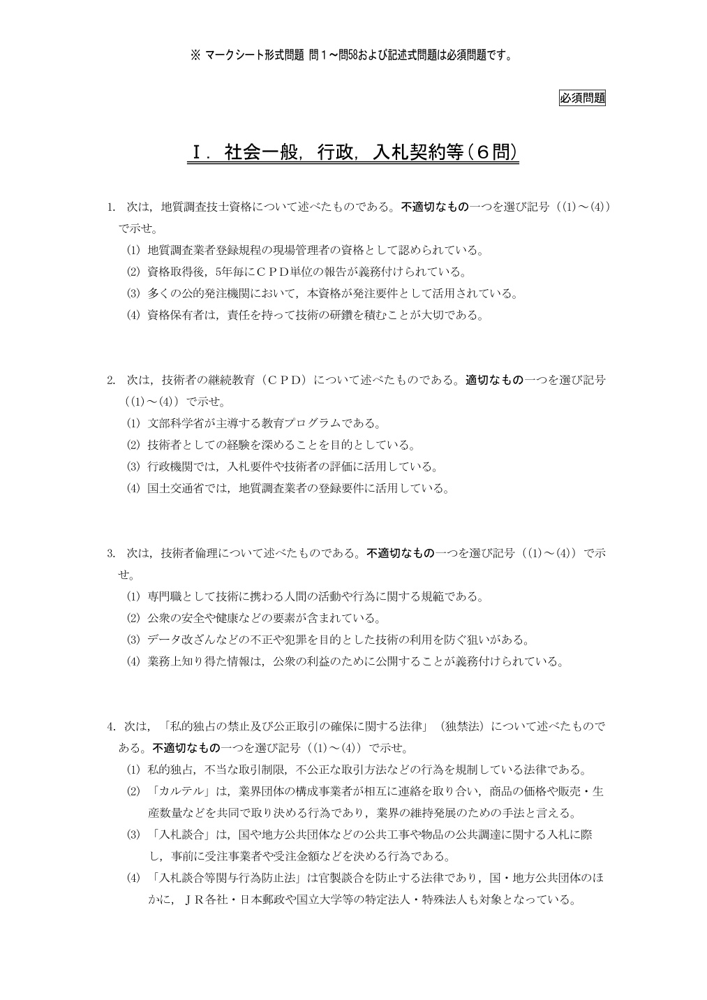
問2
必須
2. 次は，技術者の継続教育（ＣＰＤ）について述べたものである。適切なもの一つを選び記号
（（1)～(4））で示せ。
(1) 文部科学省が主導する教育プログラムである。
(2) 技術者としての経験を深めることを目的としている。
(3) 行政機関では，入札要件や技術者の評価に活用している。
(4) 国土交通省では，地質調査業者の登録要件に活用している。
図表・イラスト確認用：PDF紙面（2ページ）を表示
問3
必須
3. 次は，技術者倫理について述べたものである。不適切なもの一つを選び記号（（1)～(4））で示
せ。
(1) 専門職として技術に携わる人間の活動や行為に関する規範である。
(2) 公衆の安全や健康などの要素が含まれている。
(3) データ改ざんなどの不正や犯罪を目的とした技術の利用を防ぐ狙いがある。
(4) 業務上知り得た情報は，公衆の利益のために公開することが義務付けられている。
図表・イラスト確認用：PDF紙面（2ページ）を表示
問4
必須
4．次は，「私的独占の禁止及び公正取引の確保に関する法律」（独禁法）について述べたもので
ある。不適切なもの一つを選び記号（（1)～(4））で示せ。
(1) 私的独占，不当な取引制限，不公正な取引方法などの行為を規制している法律である。
(2) 「カルテル」は，業界団体の構成事業者が相互に連絡を取り合い，商品の価格や販売・生
産数量などを共同で取り決める行為であり，業界の維持発展のための手法と言える。
(3) 「入札談合」は，国や地方公共団体などの公共工事や物品の公共調達に関する入札に際
し，事前に受注事業者や受注金額などを決める行為である。
(4) 「入札談合等関与行為防止法」は官製談合を防止する法律であり，国・地方公共団体のほ
かに，ＪＲ各社・日本郵政や国立大学等の特定法人・特殊法人も対象となっている。
図表・イラスト確認用：PDF紙面（2ページ）を表示
問5
必須
5．次は，産業廃棄物管理票（マニフェスト）について述べたものである。不適切なもの一つを選
び記号（（1)～(4））で示せ。
(1) 排出事業者が産業廃棄物を自ら処理する場合，マニフェストの交付は不要である。
(2) 排出事業者は，マニフェストの交付後，定められた期限内に最終処分が終了したことを確
認しなければならない。
(3) 排出事業者は，産業廃棄物を処理業者に引き渡した後にマニフェストを交付する。
(4) 産業廃棄物の適正な処理を目的としている。
図表・イラスト確認用：PDF紙面（2ページ）を表示
問6
必須
6．次は，総務省の日本標準産業分類について述べたものである。不適切なもの一つを選び記号
（（1)～(4））で示せ。
(1) 日本における産業分野を4 段階に分類している。
(2) 地質調査業は「学術研究，専門・技術サービス業」に位置づけられる。
(3) 日本の公的統計（国勢調査など）における産業分類を定めたものである。
(4) 測量業は「建設業」に位置づけられる。
必須問題
Ⅱ．地質，測量，土木，建築等の知識(８問)
図表・イラスト確認用：PDF紙面（3ページ）を表示
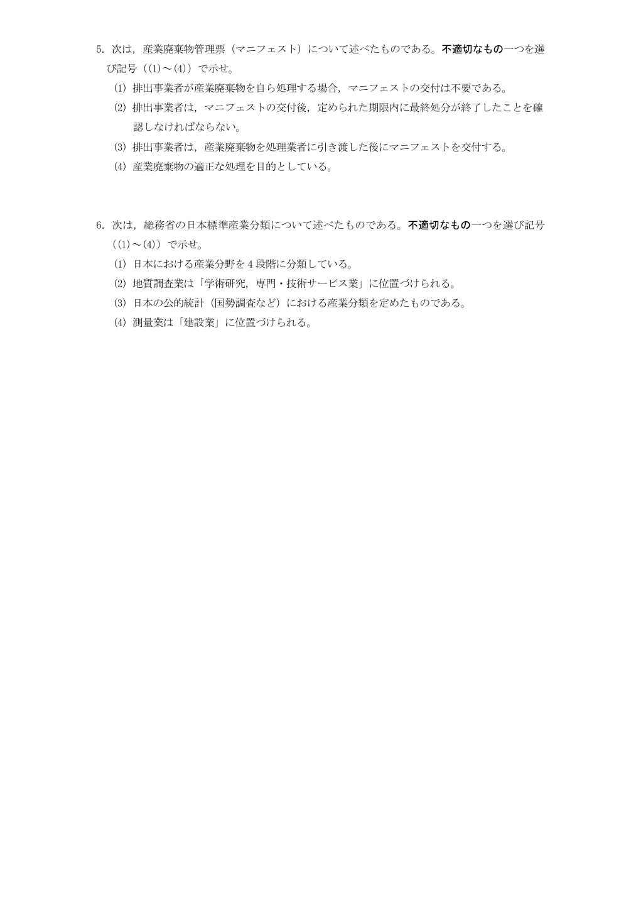
問7
必須
7．下図は，種々の断層の種類を模式的に示したものである。図のＡ～Ｄにあてはまる名称として，
適切な組合せ一つを選び記号（（1)～(4））で示せ。
※図中の灰色の帯は，断層形成前に同一層準であった地層を示す。
記号
Ａ
Ｂ
Ｃ
Ｄ
(1)
(2)
(3)
(4)
逆断層
逆断層
正断層
正断層
正断層
正断層
逆断層
逆断層
左横ずれ断層
右横ずれ断層
左横ずれ断層
右横ずれ断層
右横ずれ断層
左横ずれ断層
右横ずれ断層
左横ずれ断層
図表・イラスト確認用：PDF紙面（4ページ）を表示
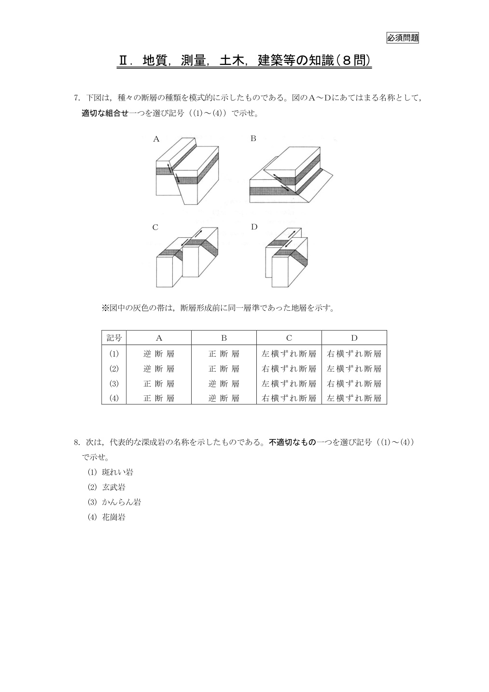
問8
必須
8．次は，代表的な深成岩の名称を示したものである。不適切なもの一つを選び記号（（1)～(4））
で示せ。
(1) 斑れい岩
(2) 玄武岩
(3) かんらん岩
(4) 花崗岩
Ａ
Ｂ
Ｃ
Ｄ
図表・イラスト確認用：PDF紙面（4ページ）を表示
問9
必須
9．次は，日本列島の地質体についての特徴を述べたものである。文中の空欄 Ａ ～
Ｄ にあてはまる語句の適切な組合せ一つを選び記号（（1)～(4））で示せ。
日本列島の地質体は，大きく西南日本と東北日本に区分される。古い岩盤類（古第三紀以前
の地層・岩石）に関して言えば，西南日本ではその地質構造は Ａ に延び，大まかには北
から南に向かって Ｂ 地質が分布する。東北日本では地質構造は Ｃ に延び，大まか
には Ｄ に向かって新しい地質が分布する。いずれも沈み込み帯である海溝側に向かって，
Ｂ 地質が分布している。
記号
Ａ
Ｂ
Ｃ
Ｄ
(1)
(2)
(3)
(4)
東 西
南 北
南 北
東 西
新しい
新しい
古 い
古 い
南 北
東 西
東 西
南 北
西から東
東から西
東から西
西から東
図表・イラスト確認用：PDF紙面（4ページ）を表示
問10
必須
10．下表は，新生代の地質年代区分を示したものである。空欄 Ａ ～ Ｄ にあてはまる
年数の適切な組合せ一つを選び記号（（1)～(4））で示せ。
代
紀
世
約万年前
新生代
第四紀
完新世
更新世
新第三紀
鮮新世
中新世
古第三紀
記号
Ａ
Ｂ
Ｃ
Ｄ
(1)
1
181
258
3300
(2)
1
258
533
2300
(3)
5
258
360
2300
(4)
5
181
533
3300
Ａ
Ｂ
Ｃ
Ｄ
図表・イラスト確認用：PDF紙面（5ページ）を表示
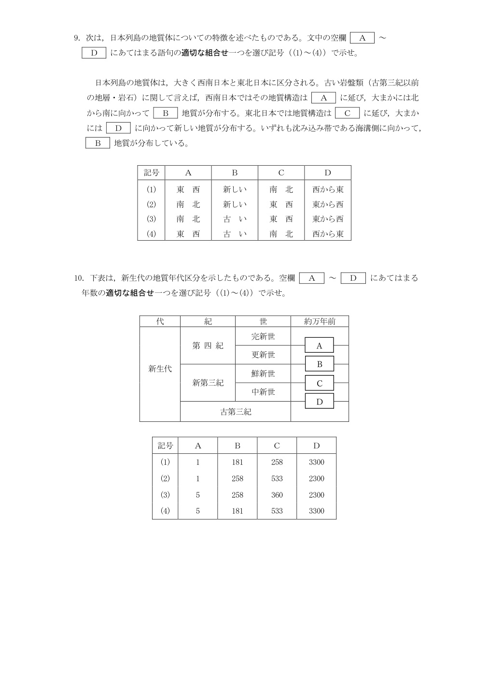
問11
必須
11．下表は，片道の水準測量の野帳記録で，Ａ地点を基準としてＢ，Ｃ，Ｄ地点の地盤標高を求
めたものである。空欄にあてはまる数値として，適切な組合せ一つを選び記号（（1)～(4））で
示せ。
測定点
後視（ｍ）
前視（ｍ）
標高T.P.（ｍ）
Ａ地点（B.M）
Ｂ地点
Ｃ地点
Ｄ地点
2.000
1.750
1.500
－
－
1.400
1.350
+20.000
+20.450
+20.800
記号
Ｂ地点の前視（ｍ)
Ｄ地点の標高T.P.（ｍ）
(1)
(2)
(3)
(4)
1.350
1.550
1.750
0.750
+21.800
+20.950
+20.800
+20.300
図表・イラスト確認用：PDF紙面（5ページ）を表示
問12
必須
12．下表は，土砂災害の種類とその特徴を示したものである。適切なもの一つを選び記号（（1)～
(4））で示せ。
記号
土砂災害
特徴
(1)
土石流
山腹や渓床を構成する土砂石れきが，地下水と一体になり，ゆ
っくりと下流へ押し流される現象
(2)
がけ崩れ
斜面の土塊が地下水などの影響によって，斜面下方へ移動する
現象
(3)
地すべり
雨や地震などの影響によって，土の抵抗力が弱まり,急激に斜
面が崩れ落ちる現象
(4)
深層崩壊
斜面崩壊のうち，表土層だけでなく深層の地盤までもが崩壊土
塊となる比較的規模の大きな崩壊現象
図表・イラスト確認用：PDF紙面（6ページ）を表示
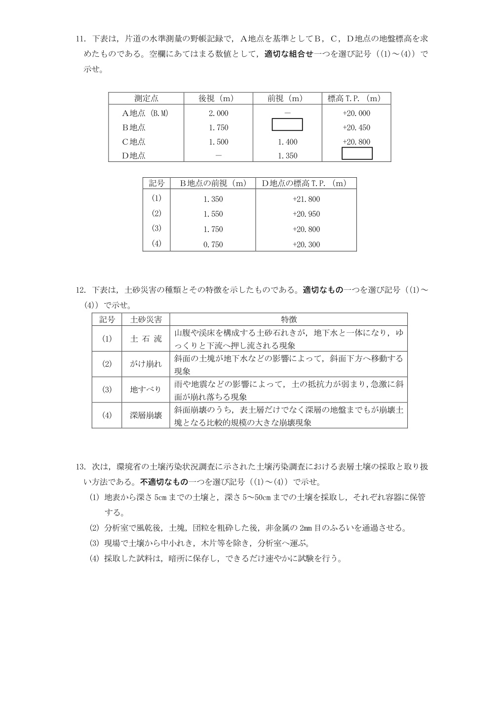
問13
必須
13．次は，環境省の土壌汚染状況調査に示された土壌汚染調査における表層土壌の採取と取り扱
い方法である。不適切なもの一つを選び記号（（1)～(4））で示せ。
(1) 地表から深さ5cm までの土壌と，深さ5～50cm までの土壌を採取し，それぞれ容器に保管
する。
(2) 分析室で風乾後，土塊，団粒を粗砕した後，非金属の2mm 目のふるいを通過させる。
(3) 現場で土壌から中小れき，木片等を除き，分析室へ運ぶ。
(4) 採取した試料は，暗所に保存し，できるだけ速やかに試験を行う。
図表・イラスト確認用：PDF紙面（6ページ）を表示
問14
必須
14．下表は，地すべりの調査観測項目と，調査によって導き出される一般的な成果の組合せを示
したものである。不適切なもの一つを選び記号（（1)～(4））で示せ。
記号
調査観測項目
成果
(1)
地下水検層
すべり面深度と地下水流動層の特定
(2)
パイプ式ひずみ計
すべり面深度と活動状況
(3)
挿入式孔内傾斜計
すべり面深度と変位量
(4)
地盤伸縮計
地すべりブロックの移動量
必須問題
Ⅲ．現場技術の知識(３２問)
図表・イラスト確認用：PDF紙面（6ページ）を表示
問15
必須
15．次は，ピストンポンプについて述べたものである。文章中の空欄 Ａ ～ Ｄ にあて
はまる名称の，適切な組合せ一つを選び記号（（1)～(4））で示せ。
原動機によって発生された回転運動は， Ａ により往復運動に変換されて Ｂ を介
して Ｃ を動かし Ｄ 内の容積を変化させ，バルブにより一定方向の流れをつくり吸
入・吐出を行う。
記号
Ａ
Ｂ
Ｃ
Ｄ
(1)
(2)
(3)
(4)
ピ
ス
ト
ン
ク
ラ
ン
ク
ピストンロッド
ク
ラ
ン
ク
ク
ラ
ン
ク
ピストンロッド
ク
ラ
ン
ク
ピ
ス
ト
ン
シ
リ
ン
ダ
ピ
ス
ト
ン
シ
リ
ン
ダ
ピストンロッド
ピストンロッド
シ
リ
ン
ダ
ピ
ス
ト
ン
シ
リ
ン
ダ
図表・イラスト確認用：PDF紙面（8ページ）を表示
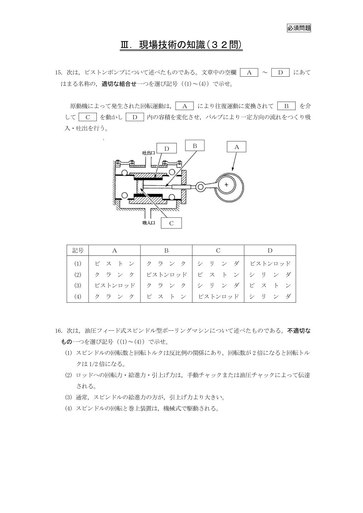
問16
必須
16．次は，油圧フィード式スピンドル型ボーリングマシンについて述べたものである。不適切な
もの一つを選び記号（（1)～(4））で示せ。
(1) スピンドルの回転数と回転トルクは反比例の関係にあり，回転数が2 倍になると回転トル
クは1/2 倍になる。
(2) ロッドへの回転力・給進力・引上げ力は，手動チャックまたは油圧チャックによって伝達
される。
(3) 通常，スピンドルの給進力の方が，引上げ力より大きい。
(4) スピンドルの回転と巻上装置は，機械式で駆動される。
Ｄ
Ａ
Ｂ
Ｃ
図表・イラスト確認用：PDF紙面（8ページ）を表示
問17
必須
17．次は，スピンドル式ボーリングマシンのチャックについて述べたものである。不適切なもの
一つを選び記号（（1)～(4））で示せ。
(1) 油圧チャックは強力な皿ばねの力を利用しチャックピースを締付けている。
(2) スクリューチャックはチャックボルトのねじ込み力でチャックピースを締付けている。
(3) チャックピースは使用するロッドに合わせたものを使用する。
(4) チャックは圧縮空気を利用したエアーチャックが主流である。
図表・イラスト確認用：PDF紙面（8ページ）を表示
問18
必須
18．次は，ボーリングポンプを取り扱う際の注意事項について述べたものである。不適切なもの
一つを選び記号（（1)～(4））で示せ。
(1) クランクケースなどの回転部には,泥水などが入らないよう十分注意する。
(2) 木屑等の異物を吸込むとバルブの動作不良の原因となるため，吸入口には金網等で異物吸
込み防止策を施す。
(3) ピストン部はラバーなどの材料で作られているので，焼損や破壊しないよう空運転を十分
行ってから作業を開始する。
(4) 冬季は,ポンプおよびホース内の水が凍結しポンプの破損の原因となるので，作業終了時
に水抜きを行うなど，凍結防止対策をとる。
図表・イラスト確認用：PDF紙面（9ページ）を表示
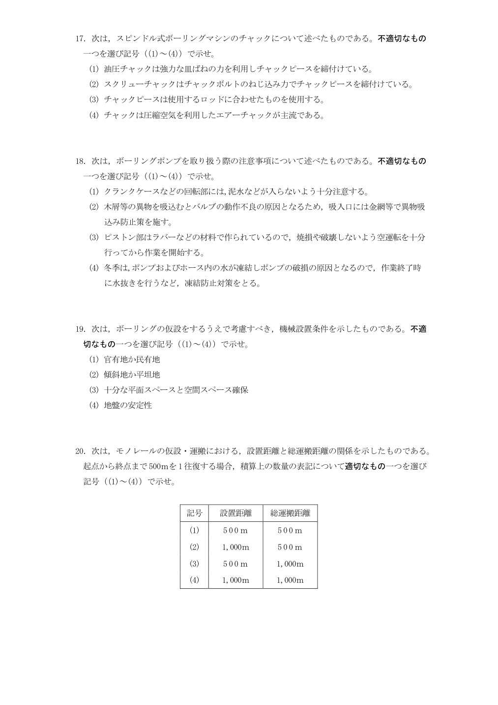
問19
必須
19．次は，ボーリングの仮設をするうえで考慮すべき，機械設置条件を示したものである。不適
切なもの一つを選び記号（（1)～(4））で示せ。
(1) 官有地か民有地
(2) 傾斜地か平坦地
(3) 十分な平面スペースと空間スペース確保
(4) 地盤の安定性
図表・イラスト確認用：PDF紙面（9ページ）を表示
問20
必須
20．次は，モノレールの仮設・運搬における，設置距離と総運搬距離の関係を示したものである。
起点から終点まで500ｍを1 往復する場合，積算上の数量の表記について適切なもの一つを選び
記号（（1)～(4））で示せ。
記号
設置距離
総運搬距離
(1)
5 0 0 ｍ
5 0 0 ｍ
(2)
1,000ｍ
5 0 0 ｍ
(3)
5 0 0 ｍ
1,000ｍ
(4)
1,000ｍ
1,000ｍ
図表・イラスト確認用：PDF紙面（9ページ）を表示
問21
必須
21．下表は，現場内小運搬の種類とその特徴を示したものである。不適切なもの一つを選び記号
（（1)～(4））で示せ。
記号
運搬方法
特徴
(1)
人 肩
条件を選ばないが，極めて低能率で危険が伴う。
最低でも歩道程度は必要である。
(2)
軽トラック等の車両
道路のない荒地，原野または急造の山間道路など不
整地での運搬によく利用される。
(3)
モノレール
レール設置に手間取るが，地表を踏み荒らすことは
少なく，近・中距離の急傾斜地の輸送に適する。
(4)
索 道
山岳地での急傾斜地，谷越えなど，運搬条件の悪い
場所では有利な方法である。
図表・イラスト確認用：PDF紙面（9ページ）を表示
問22
必須
22．次は，埋設物確認のための試験掘りについて述べたものである。文章中の空欄 Ａ ～
Ｄ にあてはまる語句の適切な組合せ一つを選び記号（（1)～(4））で示せ。
市街地や道路などでは地中に多くの埋設物（電気・ガス・水道・通信など）が存在しており，
調査ボーリングはこれら多くの埋設物を避けて行わなければならない。 Ａ のみでの確認
ではなく，埋設物の存在が疑われる場所では Ｂ により，これらの有無を確認しなければ
ならない。特に年代の Ｃ 埋設物は記録どおりに埋設されているとは限らない。
試掘は，ダブルスコップやオーガーを用い人力によって行われる。試掘可能な深さは一般的
に Ｄ ｍ程度であるが，それより深い埋設物は他の方法で確認する。
記号
Ａ
Ｂ
Ｃ
Ｄ
(1)
(2)
(3)
(4)
試 掘
試 掘
図 面
図 面
図 面
図 面
試 掘
試 掘
古 い
新しい
新しい
古 い
5
5
2
2
図表・イラスト確認用：PDF紙面（10ページ）を表示
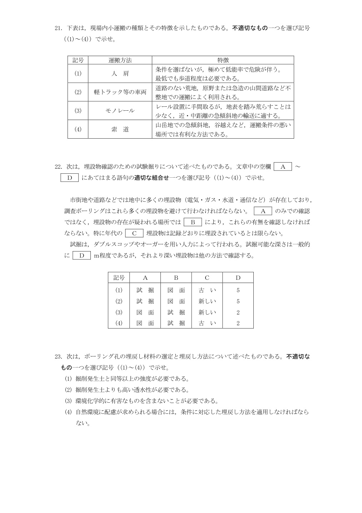
問23
必須
23．次は，ボーリング孔の埋戻し材料の選定と埋戻し方法について述べたものである。不適切な
もの一つを選び記号（（1)～(4））で示せ。
(1) 掘削発生土と同等以上の強度が必要である。
(2) 掘削発生土よりも高い透水性が必要である。
(3) 環境化学的に有害なものを含まないことが必要である。
(4) 自然環境に配慮が求められる場合には，条件に対応した埋戻し方法を適用しなければなら
ない。
図表・イラスト確認用：PDF紙面（10ページ）を表示
問24
必須
24．次は，ボーリングの掘進率について述べたものである。不適切なもの一つを選び記号（（1)～
(4））で示せ。
(1) 土質・岩石の種類に関わらず，掘削孔径が大きいほど掘進率は低下する。
(2) 掘削孔径が同じ場合，砂岩よりれき岩の方が掘進率は低下する。
(3) れき質土の場合，マトリックスの割合が大きいほど掘進率は向上する。
(4) 中硬岩の場合，均質な岩石よりも破砕帯の方が掘進率は向上する。
図表・イラスト確認用：PDF紙面（10ページ）を表示
問25
必須
25．次は，泥水の適用方法について述べたものである。不適切なもの一つを選び記号（（1)～(4））
で示せ。
(1) 砂れきでは，孔壁の崩壊を防止するために，高粘度の泥水を使用する。
(2) シルト岩・凝灰岩では，泥水粘度の変化を考慮して高粘度の泥水を使用する。
(3) 中硬岩・硬岩では，発生するカッティングスが微粒なため低粘度の泥水を使用する。
(4) ガス含有層では，ガスのボーリング孔への湧出を防ぐため高比重の泥水を使用する。
図表・イラスト確認用：PDF紙面（11ページ）を表示
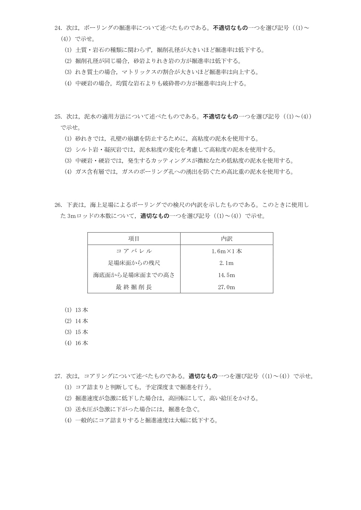
問26
必須
26．下表は，海上足場によるボーリングでの検尺の内訳を示したものである。このときに使用し
た3ｍロッドの本数について，適切なもの一つを選び記号（（1)～(4））で示せ。
項目
内訳
コアバレル
1.6ｍ×1 本
足場床面からの残尺
2.1ｍ
海底面から足場床面までの高さ
14.5ｍ
最終掘削長
図表・イラスト確認用：PDF紙面（11ページ）を表示
問27
必須
27.0ｍ
(1) 13 本
(2) 14 本
(3) 15 本
(4) 16 本
27．次は，コアリングについて述べたものである。適切なもの一つを選び記号（（1)～(4））で示せ。
(1) コア詰まりと判断しても，予定深度まで掘進を行う。
(2) 掘進速度が急激に低下した場合は，高回転にして，高い給圧をかける。
(3) 送水圧が急激に下がった場合には，掘進を急ぐ。
(4) 一般的にコア詰まりすると掘進速度は大幅に低下する。
図表・イラスト確認用：PDF紙面（11ページ）を表示
問28
必須
28．次は，ケーシングの挿入について述べたものである。不適切なもの一つを選び記号（（1)～
(4））で示せ。
(1) ケーシングの先端はなるべく沈下や逸水のない層で止める。
(2) ケーシング挿入前の循環水は抜管を考慮して清水にする。
(3) 崩壊，逸水，湧水などの孔内条件改善のために行われるが，その効果はセメンティングよ
り良い。
(4) カッティングスが孔底にある場合は，コアチューブ等で回収する。
図表・イラスト確認用：PDF紙面（11ページ）を表示
問29
必須
29．次は，器具等の孔内落下時の対応について述べたものである。不適切なもの一つを選び記号
（（1)～(4））で示せ。
(1) 小物でも，コアバレルで掘進してコアと共に採取することはない。
(2) 落下物の形状を把握することを最初に行う。
(3) 落下物が途中に引っかかっている場合は，孔底に突き落して回収する。
(4) 使用中のクラウンが落下した場合は，セメントで固めて回収する。
図表・イラスト確認用：PDF紙面（12ページ）を表示
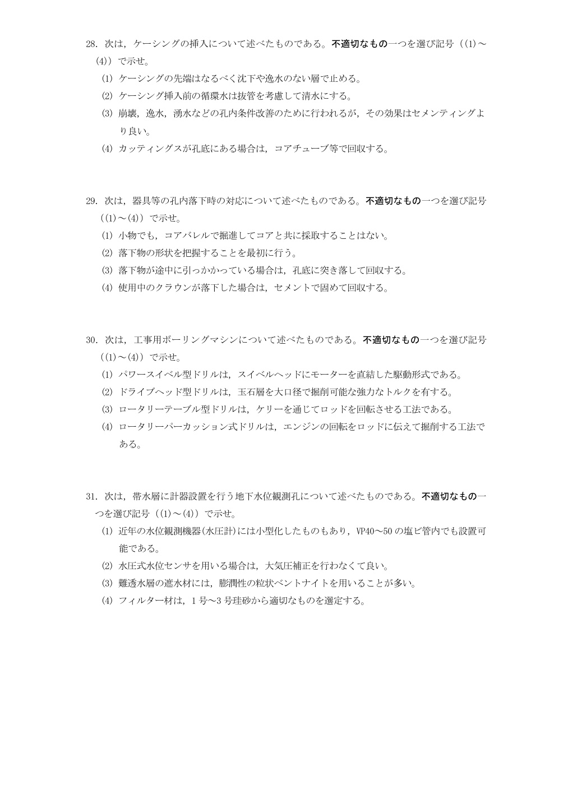
問30
必須
30．次は，工事用ボーリングマシンについて述べたものである。不適切なもの一つを選び記号
（（1)～(4））で示せ。
(1) パワースイベル型ドリルは，スイベルヘッドにモーターを直結した駆動形式である。
(2) ドライブヘッド型ドリルは，玉石層を大口径で掘削可能な強力なトルクを有する。
(3) ロータリーテーブル型ドリルは，ケリーを通じてロッドを回転させる工法である。
(4) ロータリーパーカッション式ドリルは，エンジンの回転をロッドに伝えて掘削する工法で
ある。
図表・イラスト確認用：PDF紙面（12ページ）を表示
問31
必須
31．次は，帯水層に計器設置を行う地下水位観測孔について述べたものである。不適切なもの一
つを選び記号（（1)～(4））で示せ。
(1) 近年の水位観測機器(水圧計)には小型化したものもあり，VP40～50 の塩ビ管内でも設置可
能である。
(2) 水圧式水位センサを用いる場合は，大気圧補正を行わなくて良い。
(3) 難透水層の遮水材には，膨潤性の粒状ベントナイトを用いることが多い。
(4) フィルター材は，1 号～3 号珪砂から適切なものを選定する。
図表・イラスト確認用：PDF紙面（12ページ）を表示
問32
必須
32．次は，ボーリング孔の埋戻しについて述べたものである。不適切なもの一つを選び記号（（1)
～(4））で示せ。
(1) ボーリングポンプによる孔内閉塞では，ロッドを孔底付近まで降ろす。
(2) 地下水位の高い低地において，セメントスラリー注入後，孔内からロッドを引き上げた時
に，地下水位よりセメントスラリー頂部の低下が大きくならないようにする。
(3) ベントナイト泥水を用いる場合の欠点として，材料の分離促進が挙げられる。
(4) 泥水ポンプはセメントスラリー注入後，孔口から出てくるのを確認してから止める。
図表・イラスト確認用：PDF紙面（12ページ）を表示
問33
必須
33．次は，土壌汚染調査のボーリング作業について述べたものである。適切なもの一つを選び記
号（（1)～(4））で示せ。
(1) サンプラーは，次に採取する試料に影響を与えないように洗浄は行わない。
(2) 打撃式サンプラーを用いてコアが縮む場合，掘り増しを行いコア長を調整する。
(3) 査対象物質の種類や濃度を事前に把握し，必要な保護具を着用して作業する。
(4) 化学分析が目的であるため，コア試料の観察は行わない。
図表・イラスト確認用：PDF紙面（13ページ）を表示
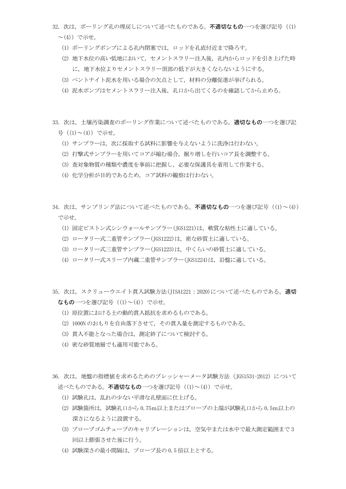
問34
必須
34．次は，サンプリング法について述べたものである。不適切なもの一つを選び記号（(1)～(4)）
で示せ。
(1) 固定ピストン式シンウォールサンプラー(JGS1221)は，軟質な粘性土に適している。
(2) ロータリー式二重管サンプラー(JGS1222)は，密な砂質土に適している。
(3) ロータリー式三重管サンプラー(JGS1223)は，中くらいの砂質土に適している。
(4) ロータリー式スリーブ内蔵二重管サンプラー(JGS1224)は，岩盤に適している。
図表・イラスト確認用：PDF紙面（13ページ）を表示
問35
必須
35．次は，スクリューウエイト貫入試験方法(JISA1221：2020)について述べたものである。適切
なもの一つを選び記号（(1)～(4)）で示せ。
(1) 原位置における土の動的貫入抵抗を求めるものである。
(2) 1000N のおもりを自由落下させて，その貫入量を測定するものである。
(3) 貫入不能となった場合は，測定終了について検討する。
(4) 密な砂質地層でも適用可能である。
図表・イラスト確認用：PDF紙面（13ページ）を表示
問36
必須
36．次は，地盤の指標値を求めるためのプレッシャーメータ試験方法（JGS1531-2012）について
述べたものである。不適切なもの一つを選び記号（（1)～(4））で示せ。
(1) 試験孔は，乱れの少ない平滑な孔壁面に仕上げる。
(2) 試験箇所は，試験孔口から0.75ｍ以上またはプローブの上端が試験孔口から0.5ｍ以上の
深さになるように設置する。
(3) プローブゴムチューブのキャリブレーションは，空気中または水中で最大測定範囲まで3
回以上膨張させた後に行う。
(4) 試験深さの最小間隔は，プローブ長の0.5 倍以上とする。
図表・イラスト確認用：PDF紙面（13ページ）を表示
問37
必須
37．次は，ボーリング孔内に設置した電気式間隙水圧計による，間隙水圧の測定方法（JGS1313-
2012）について述べたものである。不適切なもの一つを選び記号（(1)～(4)）で示せ。
(1) 地上部において受圧部のフィルターを水で飽和させる。
(2) 電気式間隙水圧計は，±10％以内の精度をもつものを選定する。
(3) 設置の際にボーリング孔底のスライムを除去する。
(4) 飽和した砂質地盤，または粘性土地盤の間隙水圧を直接求めるものである。
図表・イラスト確認用：PDF紙面（13ページ）を表示
問38
必須
38．次は，ボーリング現場における土の判別について述べたものである。不適切なもの一つを選
び記号（（1)～(4））で示せ。
(1) 砂と粘土の判別は，試料をこねて細長い棒状になるものが粘土である。
(2) 粘土とシルトの判別は，試料に振動を与えて表面に水が浮いてきたものがシルトである。
(3) 砂が多く混じるシルトを砂混りシルトとした。
(4) 土質名に関東ロームを使用した。
図表・イラスト確認用：PDF紙面（14ページ）を表示
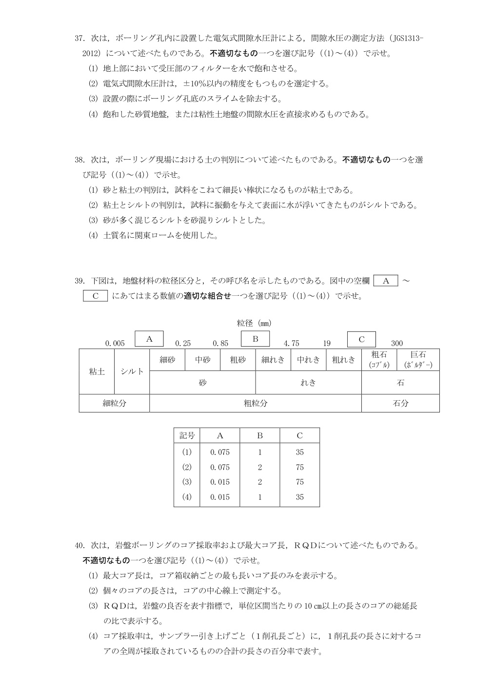
問39
必須
39．下図は，地盤材料の粒径区分と，その呼び名を示したものである。図中の空欄 Ａ ～
Ｃ にあてはまる数値の適切な組合せ一つを選び記号（（1)～(4））で示せ。
粘土
シルト
細砂
中砂
粗砂
細れき
中れき
粗れき
粗石
(ｺﾌﾞﾙ)
巨石
(ﾎﾞﾙﾀﾞ-)
砂
れき
石
細粒分
粗粒分
石分
記号
Ａ
Ｂ
Ｃ
(1)
(2)
(3)
(4)
0.075
0.075
0.015
0.015
1
2
2
1
35
75
75
35
図表・イラスト確認用：PDF紙面（14ページ）を表示
問40
必須
40．次は，岩盤ボーリングのコア採取率および最大コア長，ＲＱＤについて述べたものである。
不適切なもの一つを選び記号（(1)～(4)）で示せ。
(1) 最大コア長は，コア箱収納ごとの最も長いコア長のみを表示する。
(2) 個々のコアの長さは，コアの中心線上で測定する。
(3) ＲＱＤは，岩盤の良否を表す指標で，単位区間当たりの10 ㎝以上の長さのコアの総延長
の比で表示する。
(4) コア採取率は，サンプラー引き上げごと（１削孔長ごと）に，１削孔長の長さに対するコ
アの全周が採取されているものの合計の長さの百分率で表す。
粒径（mm）
0．
0.25
0.85
2
4.75
19
75
300
Ｂ
Ｃ
Ａ
0.005
図表・イラスト確認用：PDF紙面（14ページ）を表示
問41
必須
41．次は，地すべりボーリング柱状図のコア質量について述べたものである。不適切なもの一つ
を選び記号（(1)～(4)）で示せ。
(1) ㎏単位で記入する。
(2) 地質区分ごとに計測する。
(3) 地すべりの安定解析における単位体積重量の参考とする。
(4) コアの質量の計測区間深度，質量を記入する。
図表・イラスト確認用：PDF紙面（14ページ）を表示
問42
必須
42．次は，ボーリング柱状図の標題欄の記入要領について述べたものである。不適切なもの一つ
を選び記号（（1)～(4））で示せ。
なお，記入要領は，一般社団法人全国地質調査業協会連合会「ボーリング柱状図作成および
ボーリングコア取扱い・保管要領（案）・同解説」(平成27 年６月)に準じるものとする。
(1) 調査期間は，ボーリング削孔の開始日，終了日を記入する。
(2) 総削孔長は，削孔したボーリングの全長を1/10ｍ単位まで記入する。
(3) 緯度および経度は，世界測地系の度，分，秒で記入する。
(4) 地盤勾配は，孔口を中心に斜面上下方向各々5ｍ程度の範囲の平均勾配を記入する。
図表・イラスト確認用：PDF紙面（15ページ）を表示
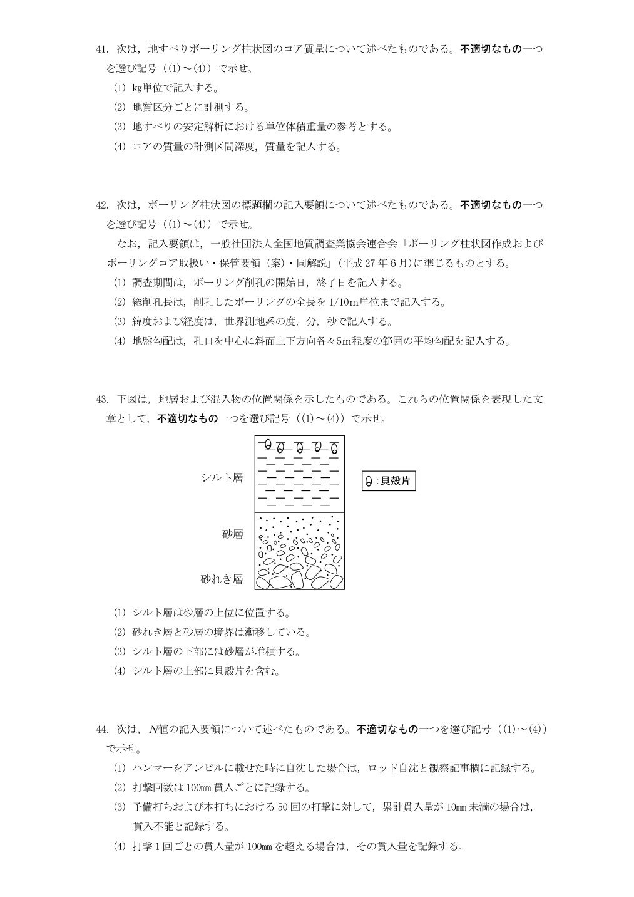
問43
必須
43．下図は，地層および混入物の位置関係を示したものである。これらの位置関係を表現した文
章として，不適切なもの一つを選び記号（（1)～(4））で示せ。
(1) シルト層は砂層の上位に位置する。
(2) 砂れき層と砂層の境界は漸移している。
(3) シルト層の下部には砂層が堆積する。
(4) シルト層の上部に貝殻片を含む。
図表・イラスト確認用：PDF紙面（15ページ）を表示
問44
必須
44．次は，Ｎ値の記入要領について述べたものである。不適切なもの一つを選び記号（（1)～(4））
で示せ。
(1) ハンマーをアンビルに載せた時に自沈した場合は，ロッド自沈と観察記事欄に記録する。
(2）打撃回数は100mm 貫入ごとに記録する。
(3) 予備打ちおよび本打ちにおける50 回の打撃に対して，累計貫入量が10mm 未満の場合は，
貫入不能と記録する。
(4) 打撃1 回ごとの貫入量が100mm を超える場合は，その貫入量を記録する。
シルト層
砂層
砂礫層
：貝殻片
砂れき層
砂層
シルト層
図表・イラスト確認用：PDF紙面（15ページ）を表示
問45
必須
45．次は，ボーリングコアの取扱い方法について述べたものである。不適切なもの一つを選び記
号（(1)～(4)）で示せ。
(1) 連続コアでコア箱に収納できない場合は，電動カッターで切断してよい。
(2) コア箱にカッティングスを収納する場合は，ビニール袋等に入れてカッティングスである
ことを明示する。
(3) ボーリングコアの軟質部は，流失の恐れがあるため手早く洗浄する。
(4) コア箱を運搬する際には，必要に応じて保護材を使用し，コアを損傷しないよう注意する。
図表・イラスト確認用：PDF紙面（15ページ）を表示
問46
必須
46．次は，土壌汚染状況調査におけるボーリング調査の注意事項について述べたものである。不
適切なもの一つを選び記号（(1)～(4)）で示せ。
(1) 土壌試料の採取では，サンプリングによる攪乱のような物理的性質の変化は問題としなく
てよい。
(2) 調査器具に付着した汚染土壌や地下水が，試料へ混入しないようにする。
(3) 試料採取の際に，土壌の化学的な性質を変化させないように試料を採取する。
(4) 循環利用する清水または泥水は，二次汚染を防ぐため交換を控える。
必須問題
Ⅳ．調査技術の理解度(４問)
図表・イラスト確認用：PDF紙面（16ページ）を表示
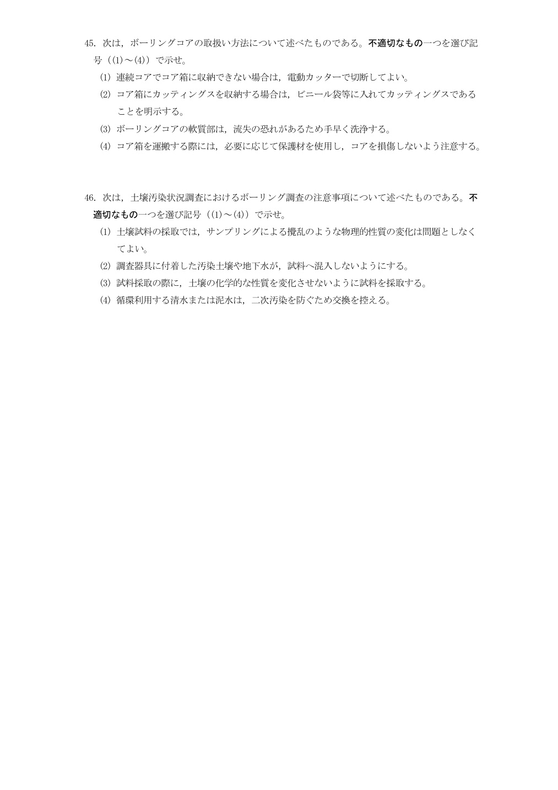
問47
必須
47．下表は，物理探査手法と適用例の組合せを示したものである。不適切な組合せ一つを選び記
号（（1)～(4））で示せ。
記号
物理探査手法
適用例
(1)
弾性波探査（屈折法）
トンネル地山調査
(2)
微動アレイ探査
都市部での地盤調査
(3)
電
気
探
査
不発弾調査
(4)
地中レーダ探査
空
洞
調
査
図表・イラスト確認用：PDF紙面（17ページ）を表示
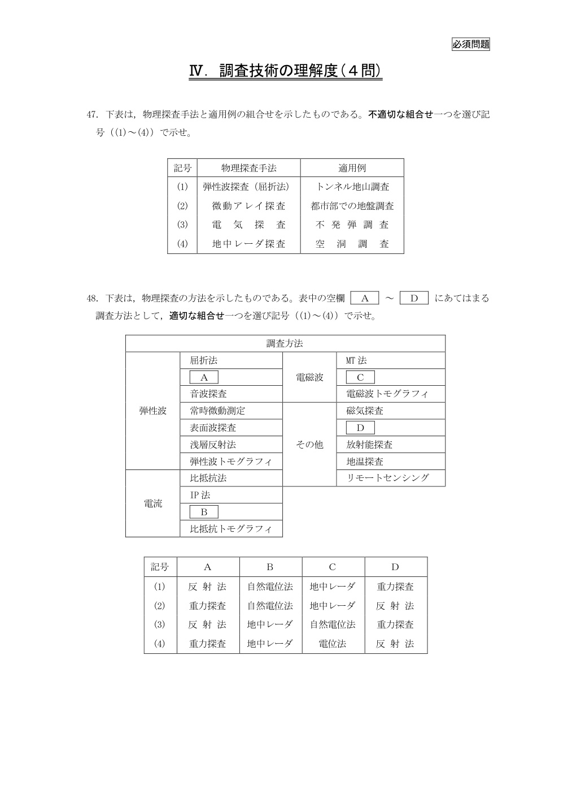
問48
必須
48．下表は，物理探査の方法を示したものである。表中の空欄 Ａ ～ Ｄ にあてはまる
調査方法として，適切な組合せ一つを選び記号（(1)～(4)）で示せ。
調査方法
弾性波
屈折法
電磁波
MT 法
Ａ
Ｃ
音波探査
電磁波トモグラフィ
常時微動測定
その他
磁気探査
表面波探査
Ｄ
浅層反射法
放射能探査
弾性波トモグラフィ
地温探査
電流
比抵抗法
リモートセンシング
IP 法
Ｂ
比抵抗トモグラフィ
記号
Ａ
Ｂ
Ｃ
Ｄ
(1)
反射法
自然電位法
地中レーダ
重力探査
(2)
重力探査
自然電位法
地中レーダ
反射法
(3)
反射法
地中レーダ
自然電位法
重力探査
(4)
重力探査
地中レーダ
電位法
反射法
図表・イラスト確認用：PDF紙面（17ページ）を表示
問49
必須
49．下表は，パイプ歪計による地すべりの変動種別を示したものである。表中の空欄 Ａ ～
Ｄ にあてはまる内容として，適切な組合せ一つを選び記号（(1)～(4)）で示せ。
変動
ランク
累積変動値
（μ/月）
変動形態
すべり面の
存在の地
形・地質学
的可能性
総合判定
累積傾向
変動状態
活動性など
変動判定
変動a
Ａ
顕著
累積変動
あり
活発に運動中
確定
変動b
Ｂ
やや顕著
累積変動
あり
緩慢に運動中
Ｃ
変動c
100 以上
ややあり
累積，断続
攪乱，回帰
あり
継続観測が必要
Ｄ
変動d
1,000 以上
（短期間）
なし
断続，攪乱
回帰
なし
すべり面なし
他の要因
異常
記号
Ａ
Ｂ
Ｃ
Ｄ
(1)
2,000 以上
1,000 以上
確 定
準確定
(2)
1,000 以上
5 0 0 以上
確 定
準確定
(3)
5,000 以上
1,000 以上
準確定
潜 在
(4)
2,000 以上
1,000 以上
準確定
潜 在
図表・イラスト確認用：PDF紙面（17ページ）を表示
問50
必須
50．次は，沖積地盤における土木的な問題点を示したものである。不適切なもの一つを選び記号
（（1)～(4））で示せ。
(1) 構造物の支持力不足
(2) 緩い砂層の液状化現象
(3) 開削に伴う地下水脈の切断や湧水の発生
(4) 軟弱層の層厚や不均一さによる不等沈下
必須問題
Ⅴ．管理技法(８問)
図表・イラスト確認用：PDF紙面（18ページ）を表示
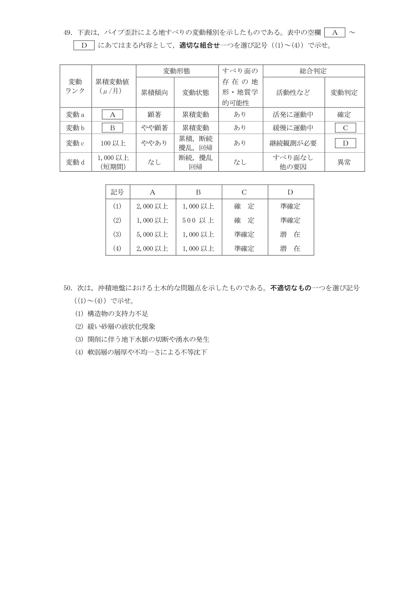
問51
必須
51．下表は，労働安全衛生法により規制している資格を示したものである。不適切なもの一つを
選び記号（（1)～(4））で示せ。
図表・イラスト確認用：PDF紙面（19ページ）を表示
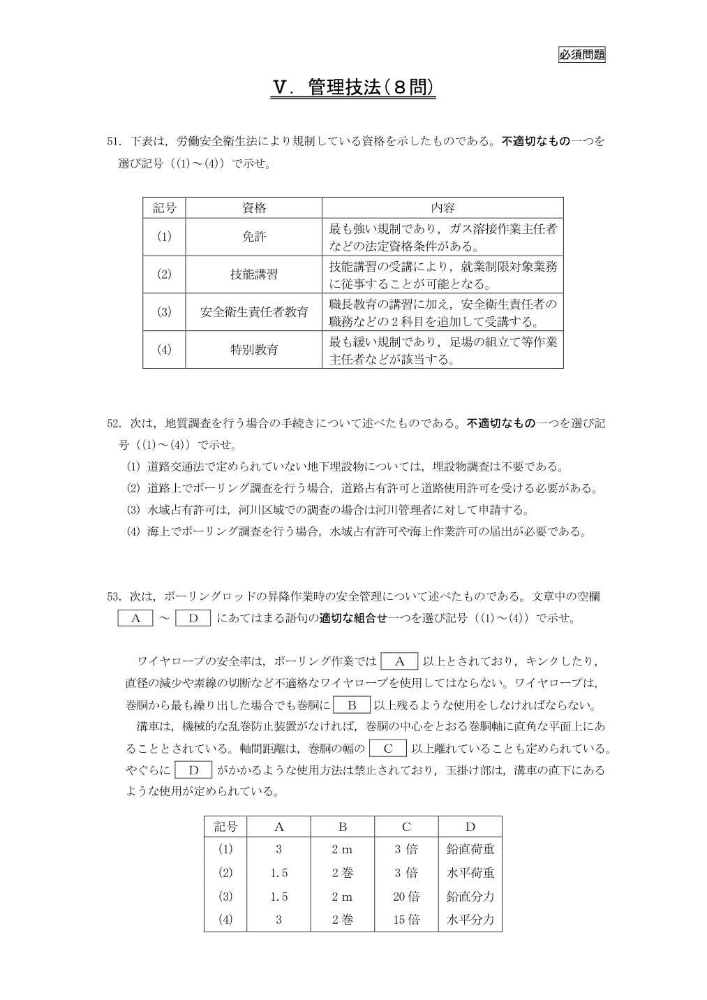
問52
必須
52．次は，地質調査を行う場合の手続きについて述べたものである。不適切なもの一つを選び記
号（（1)～(4））で示せ。
(1) 道路交通法で定められていない地下埋設物については，埋設物調査は不要である。
(2) 道路上でボーリング調査を行う場合，道路占有許可と道路使用許可を受ける必要がある。
(3) 水域占有許可は，河川区域での調査の場合は河川管理者に対して申請する。
(4) 海上でボーリング調査を行う場合，水域占有許可や海上作業許可の届出が必要である。
図表・イラスト確認用：PDF紙面（19ページ）を表示
問53
必須
53．次は，ボーリングロッドの昇降作業時の安全管理について述べたものである。文章中の空欄
Ａ ～ Ｄ にあてはまる語句の適切な組合せ一つを選び記号（（1)～(4））で示せ。
ワイヤロープの安全率は，ボーリング作業では Ａ 以上とされており，キンクしたり，
直径の減少や素線の切断など不適格なワイヤロープを使用してはならない。ワイヤロープは，
巻胴から最も繰り出した場合でも巻胴に Ｂ 以上残るような使用をしなければならない。
溝車は，機械的な乱巻防止装置がなければ，巻胴の中心をとおる巻胴軸に直角な平面上にあ
ることとされている。軸間距離は，巻胴の幅の Ｃ 以上離れていることも定められている。
やぐらに Ｄ がかかるような使用方法は禁止されており，玉掛け部は，溝車の直下にある
ような使用が定められている。
記号
資格
内容
（1）
免許
最も強い規制であり，ガス溶接作業主任者
などの法定資格条件がある。
（2）
技能講習
技能講習の受講により，就業制限対象業務
に従事することが可能となる。
（3）
安全衛生責任者教育
職長教育の講習に加え，安全衛生責任者の
職務などの2 科目を追加して受講する。
（4）
特別教育
最も緩い規制であり，足場の組立て等作業
主任者などが該当する。
記号
Ａ
Ｂ
Ｃ
Ｄ
（1）
3
2 ｍ
3 倍
鉛直荷重
（2）
1.5
2 巻
3 倍
水平荷重
（3）
1.5
2 ｍ
20 倍
鉛直分力
（4）
3
2 巻
15 倍
水平分力
図表・イラスト確認用：PDF紙面（19ページ）を表示
問54
必須
54．次は，土壌汚染調査時の安全対策について述べたものである。不適切なもの一つを選び記号
（（1)～(4））で示せ。
(1) 地下水採取時は，有害物質を含む水が目に入ることを防止するため保護眼鏡を使用する。
(2) 室内など閉鎖空間での作業では，引火性ガスや有毒ガスの滞留に注意する。
(3) 埋設廃棄物採取時は，想定される廃棄物の種類に応じた安全対策のみを重点的に行う。
(4) 土壌ガス試料採取時は，有害ガスの吸引による中毒に注意する。
図表・イラスト確認用：PDF紙面（19ページ）を表示
問55
必須
55．次は，ボーリングマシンによる回転掘削作業時の安全対策について述べたものである。不適
切なもの一つを選び記号（（1)～(4））で示せ。
(1) ウォータースイベルホースは，やぐらの変形や倒壊を防止するため固定してはならない。
(2) 複数の調査員で作業を行う場合，合図を定め，意思の確認を確実に行いながら作業を行う。
(3) ボーリングマシンのスピンドル，チャック，スイベルなどの回転部には，カバーや囲いを
設け接触による事故を防止する。
(4) チャック作業やロッド着脱作業を行う場合，クラッチレバーにストッパを取り付け，確実
に動力を遮断する必要がある。
図表・イラスト確認用：PDF紙面（20ページ）を表示
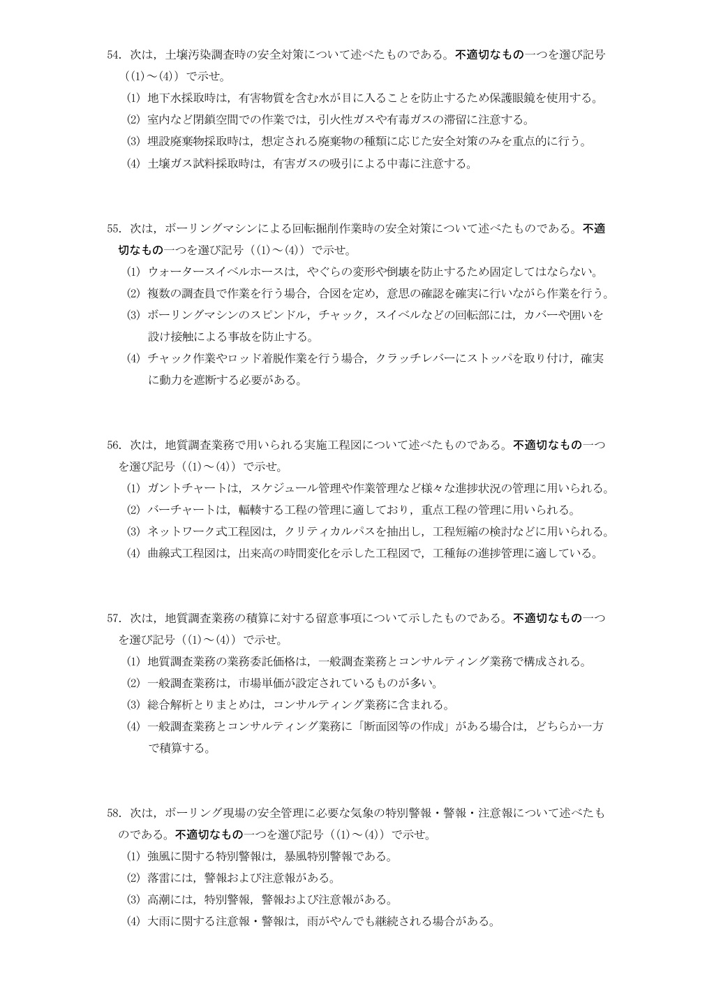
問56
必須
56．次は，地質調査業務で用いられる実施工程図について述べたものである。不適切なもの一つ
を選び記号（（1)～(4））で示せ。
(1) ガントチャートは，スケジュール管理や作業管理など様々な進捗状況の管理に用いられる。
(2) バーチャートは，輻輳する工程の管理に適しており，重点工程の管理に用いられる。
(3) ネットワーク式工程図は，クリティカルパスを抽出し，工程短縮の検討などに用いられる。
(4) 曲線式工程図は，出来高の時間変化を示した工程図で，工種毎の進捗管理に適している。
図表・イラスト確認用：PDF紙面（20ページ）を表示
問57
必須
57．次は，地質調査業務の積算に対する留意事項について示したものである。不適切なもの一つ
を選び記号（（1)～(4））で示せ。
(1) 地質調査業務の業務委託価格は，一般調査業務とコンサルティング業務で構成される。
(2) 一般調査業務は，市場単価が設定されているものが多い。
(3) 総合解析とりまとめは，コンサルティング業務に含まれる。
(4) 一般調査業務とコンサルティング業務に「断面図等の作成」がある場合は，どちらか一方
で積算する。
図表・イラスト確認用：PDF紙面（20ページ）を表示
問58
必須
58．次は，ボーリング現場の安全管理に必要な気象の特別警報・警報・注意報について述べたも
のである。不適切なもの一つを選び記号（（1)～(4））で示せ。
(1) 強風に関する特別警報は，暴風特別警報である。
(2) 落雷には，警報および注意報がある。
(3) 高潮には，特別警報，警報および注意報がある。
(4) 大雨に関する注意報・警報は，雨がやんでも継続される場合がある。
選択問題
Ⅵ．選 択 問 題
問59から問102は，選択問題である。
以下のＡ群またはＢ群のいずれか一方を任意選択の上，解答すること。
選択問題Ａ群： 22 問（主に土質に関連した分野；問59～問80）
選択問題Ｂ群： 22 問（主に岩盤に関連した分野；問81～問102）
※Ａ群，Ｂ群の選択は，受験願書で選択記載した主な調査対象「土質」，「岩盤」の
いずれかに関わらず，任意で選択することができる。
※Ａ群およびＢ群の両方を解答している場合，選択問題の採点は行わない。
解答用紙への記入の際は，注意して記入すること。
選択問題 Ａ群
選択問題Ａ群：22問（主に土質に関連した分野；問59～問80）
図表・イラスト確認用：PDF紙面（20ページ）を表示
問59
A群（土質）
59．次は，ボーリングロッドについて述べたものである。文章中の空欄 Ａ ～ Ｄ にあ
てはまる語句の適切な組合せ一つを選び記号（（1)～(4））で示せ。
ボーリングロッドには各種の規格があり， Ａ 形状，管体形状，長さなどが異なり，多
くの種類と構造がある。ロッドの構造には，管体の両端にBOX ねじを加工したものにPIN ねじ
を加工した Ｂ を接続したもの，管体とツールジョイント（PIN，BOX のねじ部）を
Ｃ で圧接したもの，ワイヤラインドリルロッドのように管体に直接 Ｄ した構造の
ものがある。
記号
Ａ
Ｂ
Ｃ
Ｄ
(1)
(2)
(3)
(4)
ね じ
外 観
ね じ
外 観
ロッドカップリング
コアチューブ
コアチューブ
ロッドカップリング
回転摩擦溶接
アーク溶接
回転摩擦溶接
アーク溶接
ねじ加工
ねじ加工
溶 接
溶 接
図表・イラスト確認用：PDF紙面（22ページ）を表示
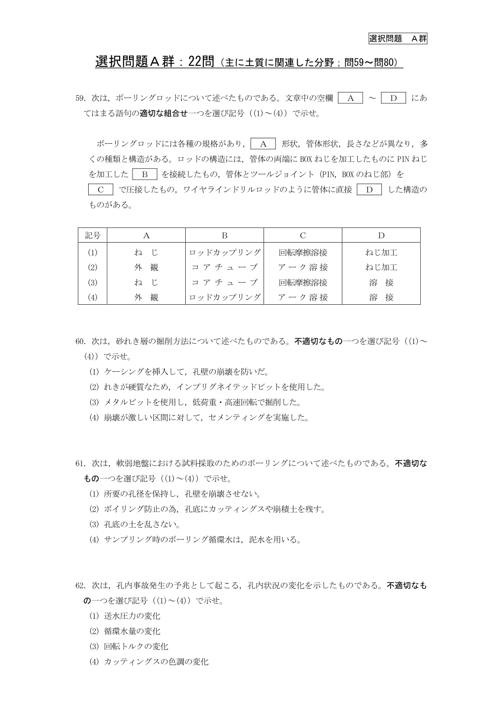
問60
A群（土質）
60．次は，砂れき層の掘削方法について述べたものである。不適切なもの一つを選び記号（（1)～
(4））で示せ。
(1) ケーシングを挿入して，孔壁の崩壊を防いだ。
(2) れきが硬質なため，インプリグネイテッドビットを使用した。
(3) メタルビットを使用し，低荷重・高速回転で掘削した。
(4) 崩壊が激しい区間に対して，セメンティングを実施した。
図表・イラスト確認用：PDF紙面（22ページ）を表示
問61
A群（土質）
61．次は，軟弱地盤における試料採取のためのボーリングについて述べたものである。不適切な
もの一つを選び記号（（1)～(4））で示せ。
(1) 所要の孔径を保持し，孔壁を崩壊させない。
(2) ボイリング防止の為，孔底にカッティングスや崩積土を残す。
(3) 孔底の土を乱さない。
(4) サンプリング時のボーリング循環水は，泥水を用いる。
図表・イラスト確認用：PDF紙面（22ページ）を表示
問62
A群（土質）
62．次は，孔内事故発生の予兆として起こる，孔内状況の変化を示したものである。不適切なも
の一つを選び記号（（1)～(4））で示せ。
(1) 送水圧力の変化
(2) 循環水量の変化
(3) 回転トルクの変化
(4) カッティングスの色調の変化
選択問題 Ａ群
図表・イラスト確認用：PDF紙面（22ページ）を表示
問63
A群（土質）
63．次は，長期観測用の計器設置用ボーリングについて述べたものである。適切なもの一つを選
び記号（（1)～(4））で示せ。
(1) 挿入式傾斜計は，埋設可とう管に専用の測定器を挿入して鉛直変位を測定する。
(2) 孔壁アンカー方式沈下計は，孔壁にアンカーをとって最大深度30ｍ程度までの鉛直変位
を測定する。
(3) 多段式地下水観測は，多深度の地下水位を自動測定できる専用の計器を用いる。
(4) 間隙水圧計は，水圧センサを地中に挿入し地下水位を測定する。
図表・イラスト確認用：PDF紙面（23ページ）を表示
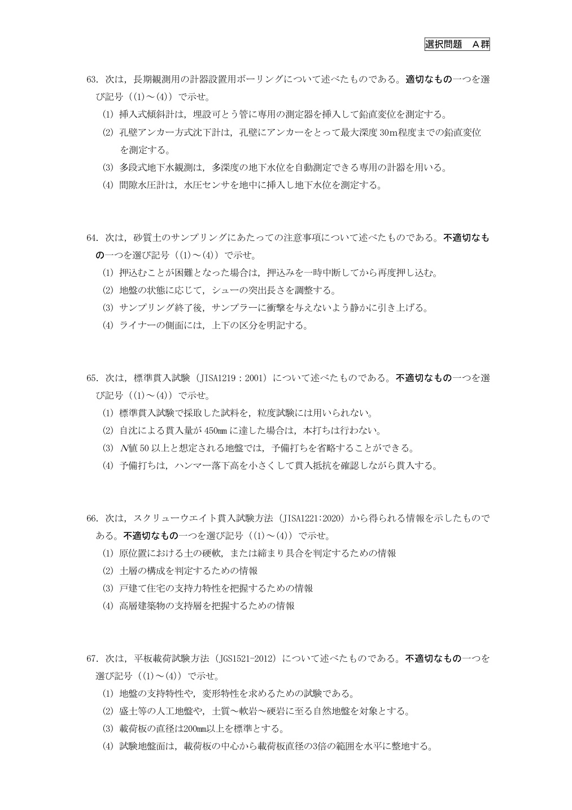
問64
A群（土質）
64．次は，砂質土のサンプリングにあたっての注意事項について述べたものである。不適切なも
の一つを選び記号（（1)～(4））で示せ。
(1) 押込むことが困難となった場合は，押込みを一時中断してから再度押し込む。
(2) 地盤の状態に応じて，シューの突出長さを調整する。
(3) サンプリング終了後，サンプラーに衝撃を与えないよう静かに引き上げる。
(4) ライナーの側面には，上下の区分を明記する。
図表・イラスト確認用：PDF紙面（23ページ）を表示
問65
A群（土質）
65．次は，標準貫入試験（JISA1219：2001）について述べたものである。不適切なもの一つを選
び記号（（1)～(4））で示せ。
(1) 標準貫入試験で採取した試料を，粒度試験には用いられない。
(2) 自沈による貫入量が450mm に達した場合は，本打ちは行わない。
(3) Ｎ値50 以上と想定される地盤では，予備打ちを省略することができる。
(4) 予備打ちは，ハンマー落下高を小さくして貫入抵抗を確認しながら貫入する。
図表・イラスト確認用：PDF紙面（23ページ）を表示
問66
A群（土質）
66．次は，スクリューウエイト貫入試験方法（JISA1221:2020）から得られる情報を示したもので
ある。不適切なもの一つを選び記号（（1)～(4））で示せ。
(1) 原位置における土の硬軟，または締まり具合を判定するための情報
(2) 土層の構成を判定するための情報
(3) 戸建て住宅の支持力特性を把握するための情報
(4) 高層建築物の支持層を把握するための情報
図表・イラスト確認用：PDF紙面（23ページ）を表示
問67
A群（土質）
67．次は，平板載荷試験方法（JGS1521-2012）について述べたものである。不適切なもの一つを
選び記号（（1)～(4））で示せ。
(1) 地盤の支持特性や，変形特性を求めるための試験である。
(2) 盛土等の人工地盤や，土質～軟岩～硬岩に至る自然地盤を対象とする。
(3) 載荷板の直径は200mm以上を標準とする。
(4) 試験地盤面は，載荷板の中心から載荷板直径の3倍の範囲を水平に整地する。
選択問題 Ａ群
図表・イラスト確認用：PDF紙面（23ページ）を表示
問68
A群（土質）
68．次は，ボーリング孔内に設置した電気式間隙水圧計による，間隙水圧の測定方法（JGS1313-
2012）について述べたものである。不適切なもの一つを選び記号（（1)～(4））で示せ。
(1) 原位置において飽和した砂質地盤，または粘性土地盤の間隙水圧を求める方法である。
(2) 電気式間隙水圧計を押し込む場合の設置方法では，孔底に本体を素早く押し込む。
(3) 電気式間隙水圧計を埋め戻す場合の設置方法では，砂などのフィルター材を投入して本体
を埋め戻す。
(4) 本体にフィルターを取り付ける際は，空気が入らないよう水中で取り付け作業を行う。
図表・イラスト確認用：PDF紙面（24ページ）を表示
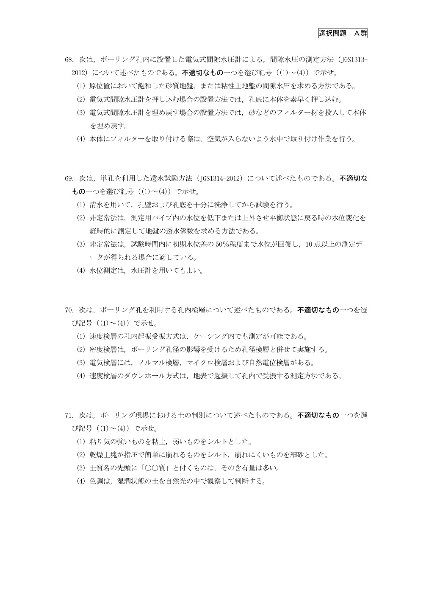
問69
A群（土質）
69．次は，単孔を利用した透水試験方法（JGS1314-2012）について述べたものである。不適切な
もの一つを選び記号（（1)～(4））で示せ。
(1) 清水を用いて，孔壁および孔底を十分に洗浄してから試験を行う。
(2) 非定常法は，測定用パイプ内の水位を低下または上昇させ平衡状態に戻る時の水位変化を
経時的に測定して地盤の透水係数を求める方法である。
(3) 非定常法は，試験時間内に初期水位差の50％程度まで水位が回復し，10 点以上の測定デ
ータが得られる場合に適している。
(4) 水位測定は，水圧計を用いてもよい。
図表・イラスト確認用：PDF紙面（24ページ）を表示
問70
A群（土質）
70．次は，ボーリング孔を利用する孔内検層について述べたものである。不適切なもの一つを選
び記号（（1)～(4））で示せ。
(1) 速度検層の孔内起振受振方式は，ケーシング内でも測定が可能である。
(2) 密度検層は，ボーリング孔径の影響を受けるため孔径検層と併せて実施する。
(3) 電気検層には，ノルマル検層，マイクロ検層および自然電位検層がある。
(4) 速度検層のダウンホール方式は，地表で起振して孔内で受振する測定方法である。
図表・イラスト確認用：PDF紙面（24ページ）を表示
問71
A群（土質）
71．次は，ボーリング現場における土の判別について述べたものである。不適切なもの一つを選
び記号（（1)～(4））で示せ。
(1) 粘り気の強いものを粘土，弱いものをシルトとした。
(2) 乾燥土塊が指圧で簡単に崩れるものをシルト，崩れにくいものを細砂とした。
(3) 土質名の先頭に「〇〇質」と付くものは，その含有量は多い。
(4) 色調は，湿潤状態の土を自然光の中で観察して判断する。
選択問題 Ａ群
図表・イラスト確認用：PDF紙面（24ページ）を表示
問72
A群（土質）
72．次は，地盤材料の工学的分類方法（JGS0051-2020）について述べたものである。不適切なも
の一つを選び記号（（1)～(4））で示せ。
(1) 分類記号は，〔 〕が大分類，{ }が中分類，（ ）が小分類として区分する。
(2) 細粒分質砂質れき（GFS）は，三角座標上の分類で15％≦細粒分，15％≦砂分である。
(3) 粒径75mm 以上の石分が，質量分率で50％以上含まれるものは岩石質材料である。
(4) 粗粒土の小分類には，液性限界試験，塑性限界試験が必要である。
図表・イラスト確認用：PDF紙面（25ページ）を表示
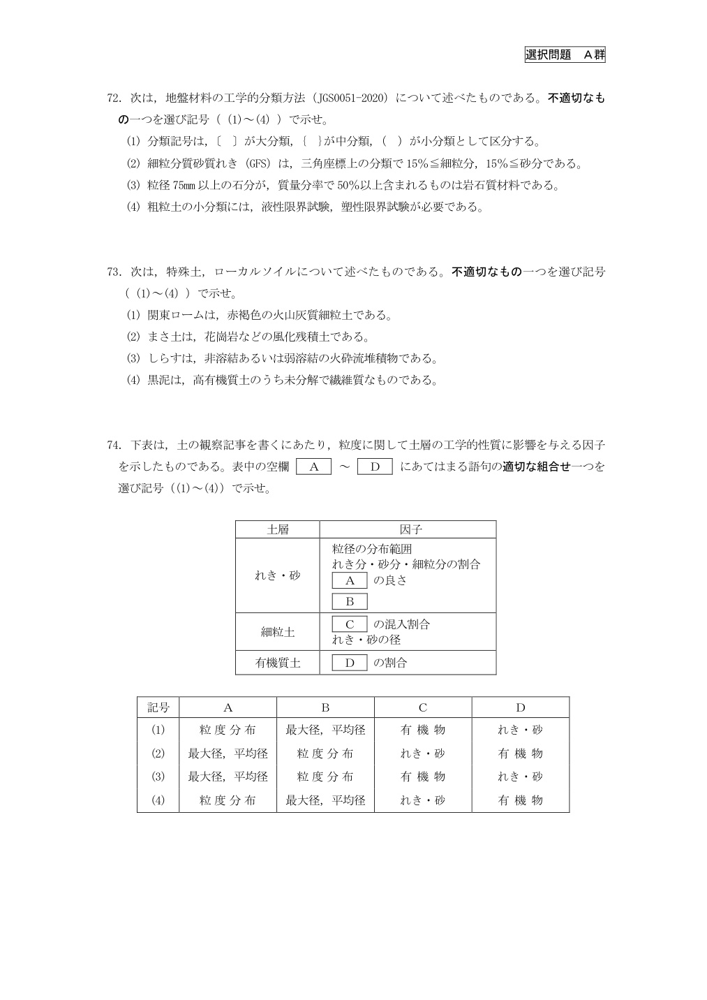
問73
A群（土質）
73．次は，特殊土，ローカルソイルについて述べたものである。不適切なもの一つを選び記号
（（1)～(4））で示せ。
(1) 関東ロームは，赤褐色の火山灰質細粒土である。
(2) まさ土は，花崗岩などの風化残積土である。
(3) しらすは，非溶結あるいは弱溶結の火砕流堆積物である。
(4) 黒泥は，高有機質土のうち未分解で繊維質なものである。
図表・イラスト確認用：PDF紙面（25ページ）を表示
問74
A群（土質）
74．下表は，土の観察記事を書くにあたり，粒度に関して土層の工学的性質に影響を与える因子
を示したものである。表中の空欄 Ａ ～ Ｄ にあてはまる語句の適切な組合せ一つを
選び記号（（1)～(4））で示せ。
土層
因子
れき・砂
粒径の分布範囲
れき分・砂分・細粒分の割合
Ａ の良さ
Ｂ
細粒土
Ｃ の混入割合
れき・砂の径
有機質土
Ｄ の割合
記号
Ａ
Ｂ
Ｃ
Ｄ
(1)
粒度分布
最大径，平均径
有機物
れき・砂
(2)
最大径，平均径
粒度分布
れき・砂
有機物
(3)
最大径，平均径
粒度分布
有機物
れき・砂
(4)
粒度分布
最大径，平均径
れき・砂
有機物
選択問題 Ａ群
図表・イラスト確認用：PDF紙面（25ページ）を表示
問75
A群（土質）
75．次は，ボーリングの観察記事について述べたものである。不適切なもの一つを選び記号（（1)
～(4））で示せ。
(1) 土質名だけでは土の性質が判断できないことが多いので，観察記事が重要となる。
(2) 土の混入物や堆積環境など，観察記事によって地層の連続性を知る手がかりとなる。
(3) 正確な土質名とＮ値，水位等のデータがあれば観察記事は必ずしも必要ではない。
(4) 観察記事が設計・施工上の，有益な判断材料となる場合がある。
図表・イラスト確認用：PDF紙面（26ページ）を表示
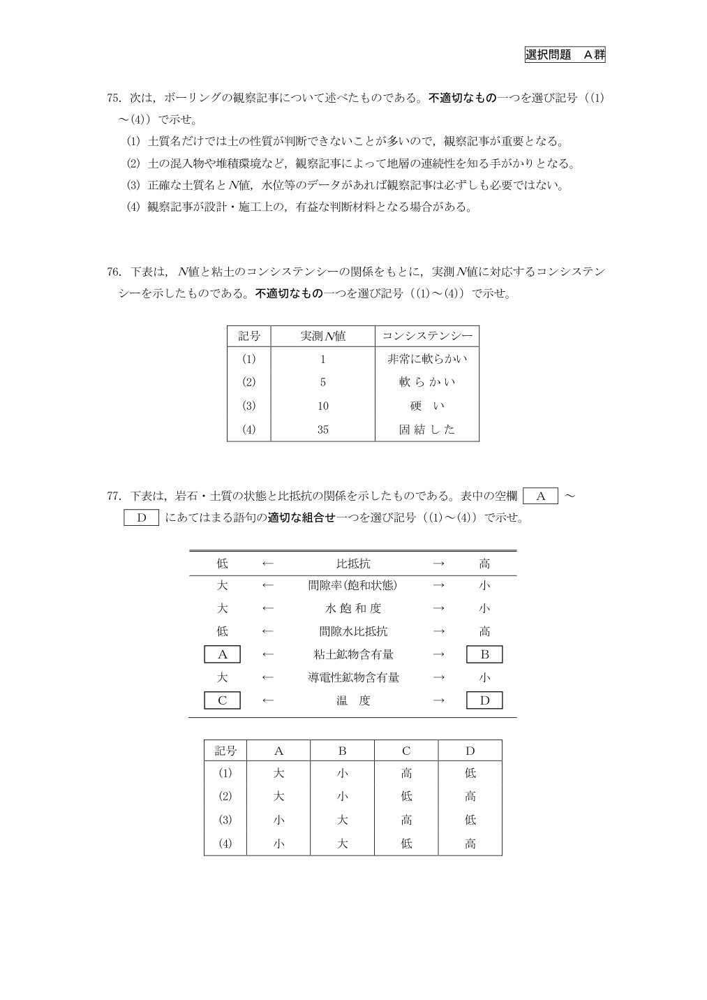
問76
A群（土質）
76．下表は，Ｎ値と粘土のコンシステンシーの関係をもとに，実測Ｎ値に対応するコンシステン
シーを示したものである。不適切なもの一つを選び記号（（1)～(4））で示せ。
記号
実測Ｎ値
コンシステンシー
(1)
1
非常に軟らかい
(2)
5
軟らかい
(3)
10
硬 い
(4)
35
固結した
図表・イラスト確認用：PDF紙面（26ページ）を表示
問77
A群（土質）
77．下表は，岩石・土質の状態と比抵抗の関係を示したものである。表中の空欄 Ａ ～
Ｄ にあてはまる語句の適切な組合せ一つを選び記号（（1)～(4））で示せ。
低 ← 比抵抗 → 高
大 ← 間隙率(飽和状態) → 小
大 ← 水飽和度 → 小
低 ← 間隙水比抵抗 → 高
← 粘土鉱物含有量 →
大 ← 導電性鉱物含有量 → 小
← 温 度 →
記号
Ａ
Ｂ
Ｃ
Ｄ
(1)
大
小
高
低
(2)
大
小
低
高
(3)
小
大
高
低
(4)
小
大
低
高
Ｃ
Ｄ
Ａ
Ｂ
選択問題 Ａ群
図表・イラスト確認用：PDF紙面（26ページ）を表示
問78
A群（土質）
78．次は，単孔を利用した透水試験（JGS1314-2012）で得られる透水係数を評価する際の留意点
について述べたものである。適切なもの一つを選び記号（（1)～(4））で示せ。
(1) 揚水法では，平衡水位を実際の水位より深く評価してしまうと，得られる透水係数は過大
に評価される。
(2) 透水性の高い地盤では，試験時の孔壁崩壊が生じやすく，得られる透水係数は過大に評価
される。
(3) 透水性の低い地盤では，注水法で得られる透水係数は，揚水法で得られる透水係数と比べ
て過大に評価される。
(4) 試験孔の洗浄が不十分であると，得られる透水係数は過大に評価される。
図表・イラスト確認用：PDF紙面（27ページ）を表示
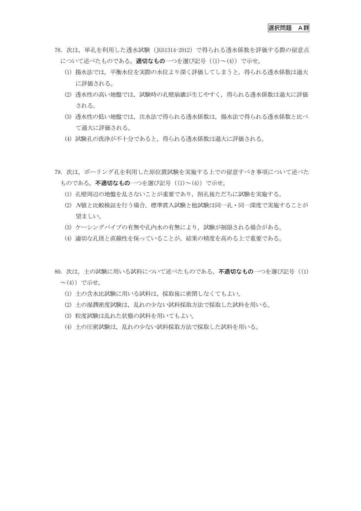
問79
A群（土質）
79．次は，ボーリング孔を利用した原位置試験を実施する上での留意すべき事項について述べた
ものである。不適切なもの一つを選び記号（（1)～(4））で示せ。
(1) 孔壁周辺の地盤を乱さないことが重要であり，削孔後ただちに試験を実施する。
(2) Ｎ値と比較検証を行う場合，標準貫入試験と他試験は同一孔・同一深度で実施することが
望ましい。
(3) ケーシングパイプの有無や孔内水の有無により，試験が制限される場合がある。
(4) 適切な孔径と直線性を保っていることが，結果の精度を高める上で重要である。
図表・イラスト確認用：PDF紙面（27ページ）を表示
問80
A群（土質）
80．次は，土の試験に用いる試料について述べたものである。不適切なもの一つを選び記号（（1)
～(4））で示せ。
(1) 土の含水比試験に用いる試料は，採取後に密閉しなくてもよい。
(2) 土の湿潤密度試験は，乱れの少ない試料採取方法で採取した試料を用いる。
(3) 粒度試験は乱れた状態の試料を用いてもよい。
(4) 土の圧密試験は，乱れの少ない試料採取方法で採取した試料を用いる。
選択問題 Ｂ群
選択問題Ｂ群：22問（主に岩盤に関連した分野；問81～問102）
図表・イラスト確認用：PDF紙面（27ページ）を表示
問81
B群（岩盤）
81．次は，ボーリングマシンのタイプについて述べたものである。文章中の空欄 Ａ ～
Ｄ にあてはまる名称の適切な組合せ一つを選び記号（（1)～(4））で示せ。
Ａ 型 Ｂ 式ボーリングマシンは，主に地質調査や鉱物資源の探査などのコアリン
グによる試料の採取を目的に開発された。
Ｃ 式ボーリングマシンは，掘削時の状況が直接フィードレバーを通して感知できるな
どの利点があり，地質調査ボーリングなどに使用されている。
石油・天然ガス開発，地熱資源調査開発などを目的に発達してきたのが Ｄ 型ボーリン
グマシンである。
記号
Ａ
Ｂ
Ｃ
Ｄ
(1)
(2)
(3)
(4)
ロータリーテーブル
ス
ピ
ン
ド
ル
ス
ピ
ン
ド
ル
ロータリーテーブル
油圧フィード
ハンドフィード
油圧フィード
パーカッション
ハンドフィード
パーカッション
ハンドフィード
油圧フィード
ス
ピ
ン
ド
ル
ロータリーテーブル
ロータリーテーブル
ス
ピ
ン
ド
ル
図表・イラスト確認用：PDF紙面（28ページ）を表示
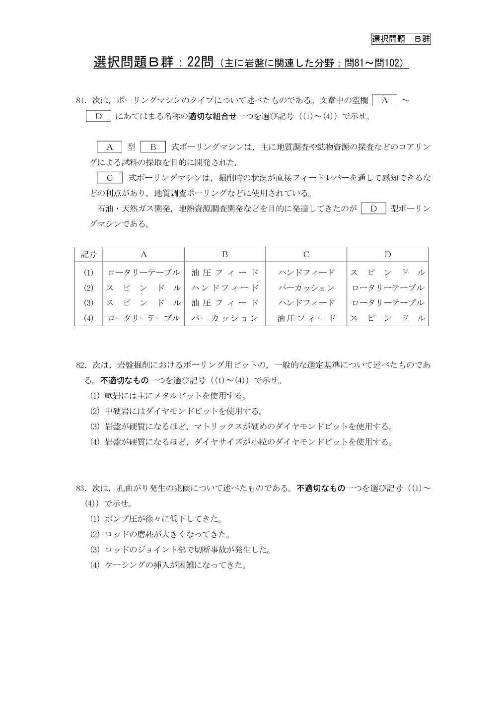
問82
B群（岩盤）
82．次は，岩盤掘削におけるボーリング用ビットの，一般的な選定基準について述べたものであ
る。不適切なもの一つを選び記号（（1)～(4））で示せ。
(1) 軟岩には主にメタルビットを使用する。
(2) 中硬岩にはダイヤモンドビットを使用する。
(3) 岩盤が硬質になるほど，マトリックスが硬めのダイヤモンドビットを使用する。
(4) 岩盤が硬質になるほど，ダイヤサイズが小粒のダイヤモンドビットを使用する。
図表・イラスト確認用：PDF紙面（28ページ）を表示
問83
B群（岩盤）
83．次は，孔曲がり発生の兆候について述べたものである。不適切なもの一つを選び記号（（1)～
(4））で示せ。
(1) ポンプ圧が徐々に低下してきた。
(2) ロッドの磨耗が大きくなってきた。
(3) ロッドのジョイント部で切断事故が発生した。
(4) ケーシングの挿入が困難になってきた。
選択問題 Ｂ群
図表・イラスト確認用：PDF紙面（28ページ）を表示
問84
B群（岩盤）
84．次は，ワイヤライン工法について述べたものである。不適切なもの一つを選び記号（（1)～
(4））で示せ。
(1) 深度200ｍを超えるボーリングの掘進率向上に有効である。
(2) 張り付きによる抑留を防ぐため，低粘度の泥水の使用が必要である。
(3) ロッドの揚降回数が少ないため，孔壁の肌荒れが少ない。
(4) 孔壁とロッドの間隙が小さいため，カッティングスの排出効率が悪い。
図表・イラスト確認用：PDF紙面（29ページ）を表示
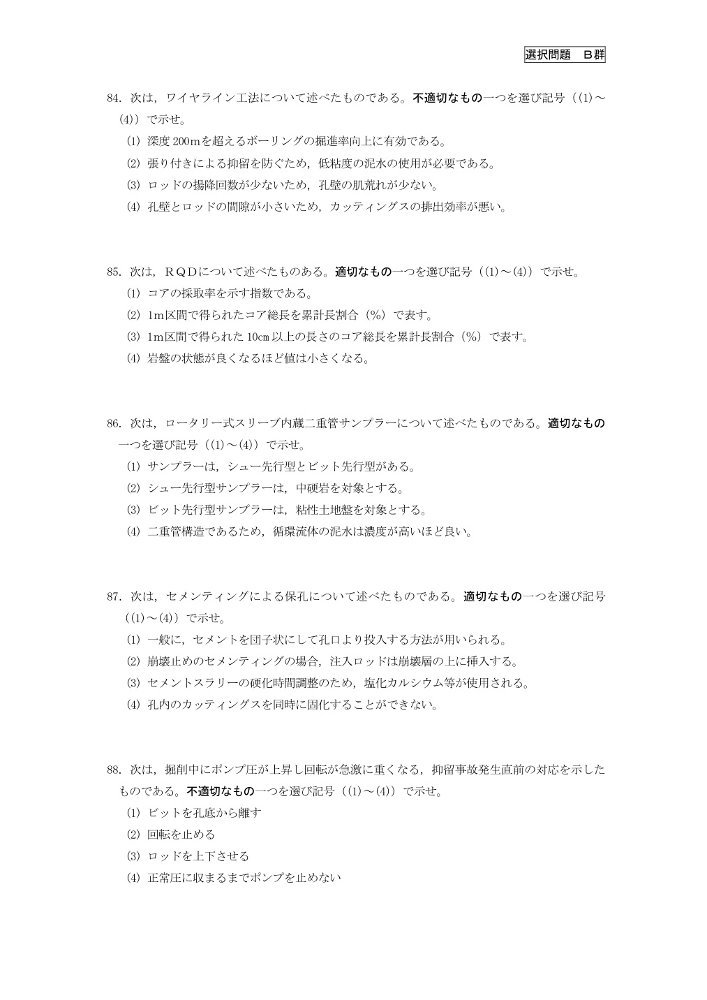
問85
B群（岩盤）
85．次は，ＲＱＤについて述べたものある。適切なもの一つを選び記号（（1)～(4））で示せ。
(1) コアの採取率を示す指数である。
(2）1ｍ区間で得られたコア総長を累計長割合（％）で表す。
(3) 1ｍ区間で得られた10cm 以上の長さのコア総長を累計長割合（％）で表す。
(4) 岩盤の状態が良くなるほど値は小さくなる。
図表・イラスト確認用：PDF紙面（29ページ）を表示
問86
B群（岩盤）
86．次は，ロータリー式スリーブ内蔵二重管サンプラーについて述べたものである。適切なもの
一つを選び記号（（1)～(4））で示せ。
(1) サンプラーは，シュー先行型とビット先行型がある。
(2) シュー先行型サンプラーは，中硬岩を対象とする。
(3) ビット先行型サンプラーは，粘性土地盤を対象とする。
(4) 二重管構造であるため，循環流体の泥水は濃度が高いほど良い。
図表・イラスト確認用：PDF紙面（29ページ）を表示
問87
B群（岩盤）
87．次は，セメンティングによる保孔について述べたものである。適切なもの一つを選び記号
（（1)～(4））で示せ。
(1) 一般に，セメントを団子状にして孔口より投入する方法が用いられる。
(2) 崩壊止めのセメンティングの場合，注入ロッドは崩壊層の上に挿入する。
(3) セメントスラリーの硬化時間調整のため，塩化カルシウム等が使用される。
(4) 孔内のカッティングスを同時に固化することができない。
図表・イラスト確認用：PDF紙面（29ページ）を表示
問88
B群（岩盤）
88．次は，掘削中にポンプ圧が上昇し回転が急激に重くなる，抑留事故発生直前の対応を示した
ものである。不適切なもの一つを選び記号（（1)～(4））で示せ。
(1) ビットを孔底から離す
(2) 回転を止める
(3) ロッドを上下させる
(4) 正常圧に収まるまでポンプを止めない
選択問題 Ｂ群
図表・イラスト確認用：PDF紙面（29ページ）を表示
問89
B群（岩盤）
89．次は，一般社団法人 全国地質調査業協会連合会で示されている「高品質ボーリング」が有効
となる地層を示したものである。不適切なもの一つを選び記号（（1)～(4））で示せ。
(1) 亀裂のほとんどない均質な泥岩
(2) 断層角れき・断層粘土などの断層破砕部
(3) チャートなどの硬岩の割れ目密集部
(4) 地すべりのすべり面・移動土塊
図表・イラスト確認用：PDF紙面（30ページ）を表示
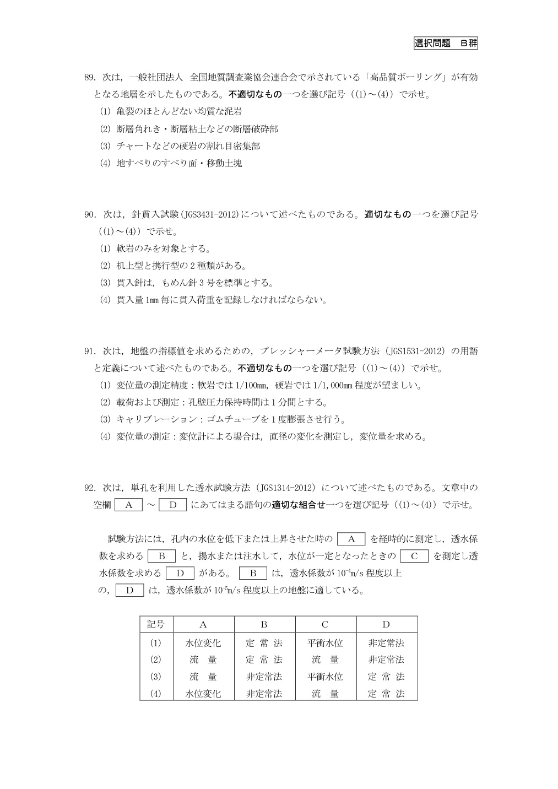
問90
B群（岩盤）
90．次は，針貫入試験(JGS3431-2012)について述べたものである。適切なもの一つを選び記号
（(1)～(4)）で示せ。
(1) 軟岩のみを対象とする。
(2) 机上型と携行型の2 種類がある。
(3) 貫入針は，もめん針3 号を標準とする。
(4) 貫入量1mm 毎に貫入荷重を記録しなければならない。
図表・イラスト確認用：PDF紙面（30ページ）を表示
問91
B群（岩盤）
91．次は，地盤の指標値を求めるための，プレッシャーメータ試験方法（JGS1531-2012）の用語
と定義について述べたものである。不適切なもの一つを選び記号（(1)～(4)）で示せ。
(1) 変位量の測定精度：軟岩では1/100mm，硬岩では1/1,000mm 程度が望ましい。
(2) 載荷および測定：孔壁圧力保持時間は1 分間とする。
(3) キャリブレーション：ゴムチューブを1 度膨張させ行う。
(4) 変位量の測定：変位計による場合は，直径の変化を測定し，変位量を求める。
図表・イラスト確認用：PDF紙面（30ページ）を表示
問92
B群（岩盤）
92．次は，単孔を利用した透水試験方法（JGS1314-2012）について述べたものである。文章中の
空欄 Ａ ～ Ｄ にあてはまる語句の適切な組合せ一つを選び記号（(1)～(4)）で示せ。
試験方法には，孔内の水位を低下または上昇させた時の Ａ を経時的に測定し，透水係
数を求める Ｂ と，揚水または注水して，水位が一定となったときの Ｃ を測定し透
水係数を求める Ｄ がある。 Ｂ は，透水係数が10-4m/s 程度以上
の， Ｄ は，透水係数が10-5m/s 程度以上の地盤に適している。
記号
Ａ
Ｂ
Ｃ
Ｄ
(1)
(2)
(3)
(4)
水位変化
流 量
流 量
水位変化
定常法
定常法
非定常法
非定常法
平衝水位
流 量
平衝水位
流 量
非定常法
非定常法
定常法
定常法
選択問題 Ｂ群
図表・イラスト確認用：PDF紙面（30ページ）を表示
問93
B群（岩盤）
93．次は，岩盤ボーリングの，コアの風化の程度について述べたものである。不適切なもの一つ
を選び記号（(1)～(4)）で示せ。
(1) 風化は，岩種，岩相，風化作用，風化時の環境条件によって異なる。
(2) 風化は，造岩鉱物の変質や酸化の状況などから風化の程度を区分する。
(3) 風化の程度を岩級区分の要素とする場合，全国一律の基準で評価する。
(4) 風化の程度を区分するのに使用した基準表は，柱状図の末尾または別紙に凡例として示す。
図表・イラスト確認用：PDF紙面（31ページ）を表示
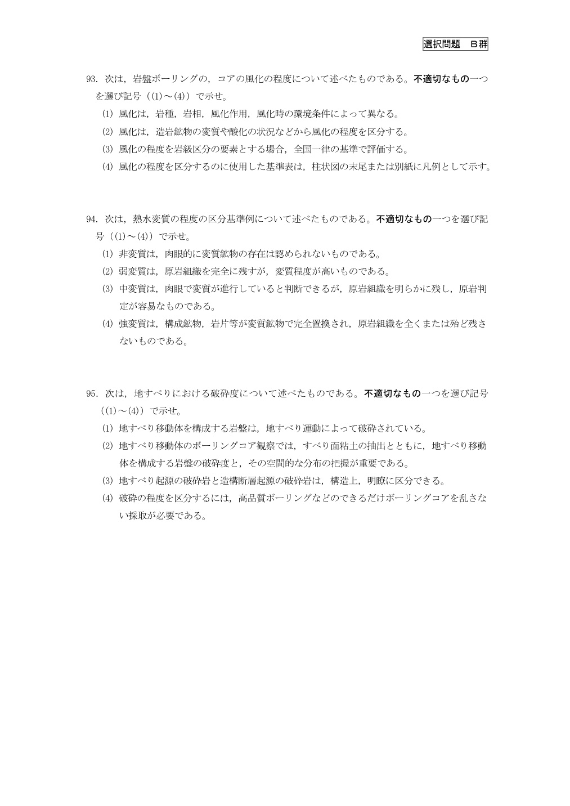
問94
B群（岩盤）
94．次は，熱水変質の程度の区分基準例について述べたものである。不適切なもの一つを選び記
号（(1)～(4)）で示せ。
(1) 非変質は，肉眼的に変質鉱物の存在は認められないものである。
(2) 弱変質は，原岩組織を完全に残すが，変質程度が高いものである。
(3) 中変質は，肉眼で変質が進行していると判断できるが，原岩組織を明らかに残し，原岩判
定が容易なものである。
(4) 強変質は，構成鉱物，岩片等が変質鉱物で完全置換され，原岩組織を全くまたは殆ど残さ
ないものである。
図表・イラスト確認用：PDF紙面（31ページ）を表示
問95
B群（岩盤）
95．次は，地すべりにおける破砕度について述べたものである。不適切なもの一つを選び記号
（(1)～(4)）で示せ。
(1) 地すべり移動体を構成する岩盤は，地すべり運動によって破砕されている。
(2) 地すべり移動体のボーリングコア観察では，すべり面粘土の抽出とともに，地すべり移動
体を構成する岩盤の破砕度と，その空間的な分布の把握が重要である。
(3) 地すべり起源の破砕岩と造構断層起源の破砕岩は，構造上，明瞭に区分できる。
(4) 破砕の程度を区分するには，高品質ボーリングなどのできるだけボーリングコアを乱さな
い採取が必要である。
選択問題 Ｂ群
図表・イラスト確認用：PDF紙面（31ページ）を表示
問96
B群（岩盤）
96．下表は，特殊な保管が必要な岩石を示したものである。表中の空欄 Ａ ～ Ｄ にあ
てはまる語句の適切な組合せ一つを選び記号（(1)～(4)）で示せ。
条件
岩石の種類の例
水を与えてはいけない試料
・膨潤性の岩石（ Ａ など）
・一部の膨潤性火砕流堆積物
・ Ｂ を発生しやすい岩石
水分保持が必要な試料
・ Ｃ を多く含む岩石
・含水量などの室内試験を行う試料
乾湿の繰り返しをしてはいけない試料
・ Ｄ 以降の海成泥岩（頁岩）
記号
Ａ
Ｂ
Ｃ
Ｄ
(1)
(2)
(3)
(4)
蛇紋岩
流紋岩
蛇紋岩
流紋岩
ヒ 素
酸性水
酸性水
ヒ 素
重金属
粘土鉱物
粘土鉱物
重金属
第四紀
新第三紀
新第三紀
第四紀
図表・イラスト確認用：PDF紙面（32ページ）を表示
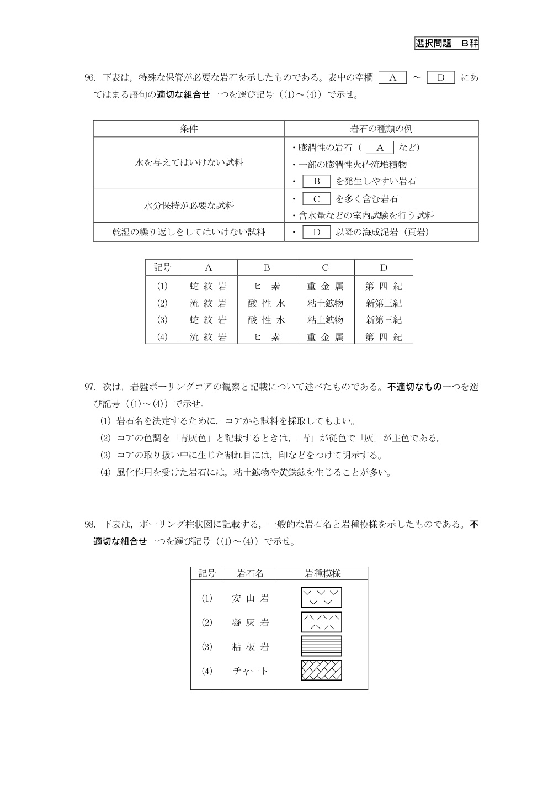
問97
B群（岩盤）
97．次は，岩盤ボーリングコアの観察と記載について述べたものである。不適切なもの一つを選
び記号（(1)～(4)）で示せ。
(1) 岩石名を決定するために，コアから試料を採取してもよい。
(2) コアの色調を「青灰色」と記載するときは，「青」が従色で「灰」が主色である。
(3) コアの取り扱い中に生じた割れ目には，印などをつけて明示する。
(4) 風化作用を受けた岩石には，粘土鉱物や黄鉄鉱を生じることが多い。
図表・イラスト確認用：PDF紙面（32ページ）を表示
問98
B群（岩盤）
98．下表は，ボーリング柱状図に記載する，一般的な岩石名と岩種模様を示したものである。不
適切な組合せ一つを選び記号（(1)～(4)）で示せ。
記号
岩石名
岩種模様
（1）
（2）
（3）
（4）
安山岩
凝灰岩
粘板岩
チャート
選択問題 Ｂ群
図表・イラスト確認用：PDF紙面（32ページ）を表示
問99
B群（岩盤）
99．下図は，地表地質踏査で確認した露頭において，クリノメーターを使用してＡ面の走向を計
測する際の，クリノメーターの使用方法を示したものである。適切なもの一つを選び記号（(1)
～(4)）で示せ。
図表・イラスト確認用：PDF紙面（33ページ）を表示
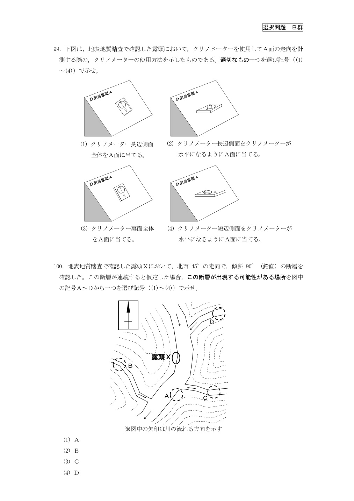
問100
B群（岩盤）
100．地表地質踏査で確認した露頭Ｘにおいて，北西45°の走向で，傾斜90°（鉛直）の断層を
確認した。この断層が連続すると仮定した場合，この断層が出現する可能性がある場所を図中
の記号Ａ～Ｄから一つを選び記号（(1)～(4)）で示せ。
※図中の矢印は川の流れる方向を示す
(1) Ａ
(2) Ｂ
(3) Ｃ
(4) Ｄ
(1) クリノメーター長辺側面
全体をＡ面に当てる。
(2) クリノメーター長辺側面をクリノメーターが
水平になるようにＡ面に当てる。
(3) クリノメーター裏面全体
をＡ面に当てる。
(4) クリノメーター短辺側面をクリノメーターが
水平になるようにＡ面に当てる。
露頭Ｘ
Ａ
Ｂ
Ｃ
Ｄ
選択問題 Ｂ群
図表・イラスト確認用：PDF紙面（33ページ）を表示
問101
B群（岩盤）
101．下図は，あるボーリング孔の深度15ｍ～16ｍ間の，ボアホールテレビ観察で得られた孔壁展
開画像である。不連続面Ａの走向および傾斜方向の組合せとして，適切なもの一つを選び記号
（(1)～(4)）で示せ。
(1) 東西走向で，南側に傾斜
(2) 北西走向で，南西側に傾斜
(3) 北東走向で，北西側に傾斜
(4) 南北走向で，西側に傾斜
図表・イラスト確認用：PDF紙面（34ページ）を表示
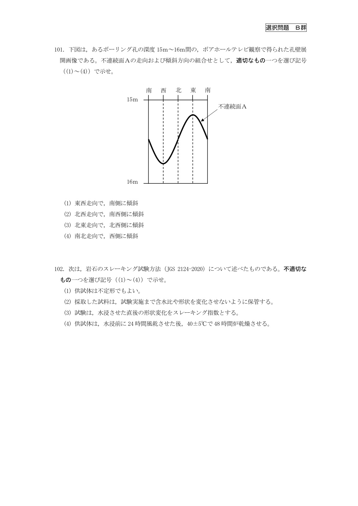
問102
B群（岩盤）
102．次は，岩石のスレーキング試験方法（JGS 2124-2020）について述べたものである。不適切な
もの一つを選び記号（（1)～(4））で示せ。
(1) 供試体は不定形でもよい。
(2) 採取した試料は，試験実施まで含水比や形状を変化させないように保管する。
(3) 試験は，水浸させた直後の形状変化をスレーキング指数とする。
(4) 供試体は，水浸前に24 時間風乾させた後，40±5℃で48 時間炉乾燥させる。
北
南
南
15m
16m
不連続面Ａ
東
西
15ｍ
16ｍ
不連続面Ａ
南
西
北
東
南
必須問題
Ⅶ．記述式問題 (2問)
以下の問いに対する解答を答案用紙（その２）に記述せよ。
第１問 孔内状況の悪化について，その原因とそれを放置した場合に進展する可能性がある孔内
事故を下表にまとめた。表中の空欄 Ａ ～ Ｇ にあてはまる語句を記述せよ。な
お，孔内状況とは，掘進作業に障害を与える孔内の現象をいう。
項目
孔内状況の悪化の原因 それを放置した場合に進展する可能性がある
孔内状況の変化
その後に発生す
る主な孔内事故
（1） Ａ の孔内残留
孔底および崩壊部（ポケット）への Ａ 残留
孔壁の Ｂ
ロッドやコアバ
レルの Ｇ
（2） Ｂ の発生
地層（孔壁）の Ｂ ・剥離の発生
（3） Ｃ の発生
Ｃ による循環水中の Ａ の排出不良，
地層の Ｂ
（4） Ｄ の悪化
固形分増加による Ｄ 不良および
Ｅ の肥厚による孔径の縮小
（5） Ｆ の発生
地層の Ｆ による孔径の縮小
第２問 ボーリング調査現場では，作業が常に安全に行われているか，不安定行動はないかなど，定
期的に安全パトロールが実施されている。
下記は，一般的な土質ボーリング作業における「安全点検項目(大分類)」の主たるものであ
る。これらのうち，「機械・設置物関係(1)～(5)」および「作業関係(7)～(10)」からそれぞれ
２つ選び，解答例に示したように個別の点検項目を２つ記述せよ。なお，「(6)揚荷装置」は
解答例のため選択対象外とする。
なお、答案用紙には、以下の記入例を参考に記入すること。
【記入例】
選択した安全点検項目(大分類)
◎機械・設置物関係(1)～(5)
(6) 揚荷装置（解答例）
①スナッチブロックは外れ止め付きで取り付けは確実か
②チェーンブロックのフック，チェーンに亀裂はないか
(1)
服装・保護具
(2)
安全柵
(3)
自走装置および運搬機
(4)
試錐機・原動機・ポンプ
(5)
櫓・昇降梯子
(6)
揚荷装置（解答例）
(7)
整理・整頓・清掃
(8)
掘進作業
(9)
移動式クレーン作業
(10) 玉掛作業
◎機械・設置物関係
◎作業関係